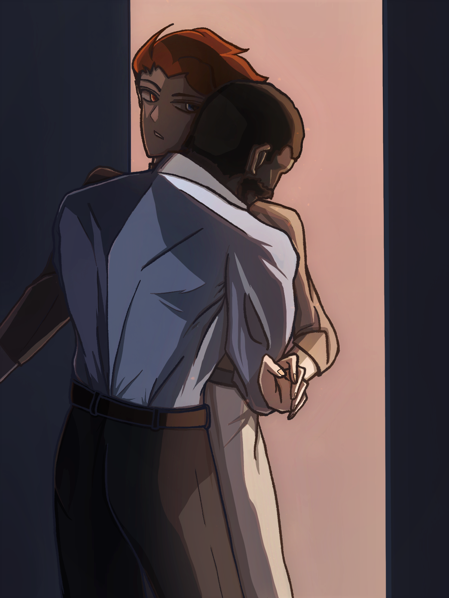

《溺于火》内页公开
一个时间线有所变动但大抵还是原作背景的哨兵向导au 堆满了胡诌设定
充满个人偏好以及恶趣味（？）的剧情展开 究极俗套的纯爱故事
cp有且仅有moireyes 左右不重要（开始了
最后 祝贺本文生了三年终于生出来了 感动（
上篇
第一章
“加比，报告现在的情况！”
“西南方向出现敌方增援，让其他人先去撤离点——嘁，我这边有点忙，等会再——”猛烈的炮火声混杂着某人烦躁的呼喊，紧接着，语音戛然而止，显然是通讯设备遭到了外力毁坏。
“该死……A1小队注意，行动目标改为前往撤离点！A2小队准备接应莱耶斯指挥官！”杰克迅速切换到另一个通信频道，下达了命令。看到雷达上的绿点开始往计划的方向移动，他靠到椅背上长舒了一口气，眼睛却依然死死盯着屏幕上唯一没有任何移动的标记，没有半分放松的样子。
“你不该同意他的申请。”安娜站在他身旁，面色也是一样的阴沉。
他闭上眼，叹了口气，“但你也知道，没人能拦得住他。”同为相处多年的好友，安娜自然深谙加布里尔的秉性，虽然嘴上说着，却也不得不赞同杰克的说法。感知到对方的情绪波动，她也不再多说，只是把手放上对方肩头。
“多谢，”杰克转过头，宽慰般笑了笑，但随后，这抹有些僵硬的笑容便消失得无影无踪。
屏幕上，那个静止的绿点变成了红色。
“你们还真是难缠。”加布里尔一个侧身，堪堪躲过从耳边掠过的一连串子弹，耳麦却在闪避中掉到地上，被碾成了碎片。他举起枪，四溅的弹片击中了为首的智械的头部，仍在蓄能的炮口渐渐停止了运转。还有一台。他听见身后的隆隆声，来不及转身便调转枪口扣下扳机，同预想中一致的爆炸声使他暂时松了口气。
但还不够。源源不断的敌军从四面八方涌来，飞驰而下的金属洪流几乎要将他淹没。再快一点。子弹的爆裂声和履带转动的轰鸣在他脑中嗡嗡作响，在敏锐感官的放大作用下，原本微不可闻的环境音此时也一齐涌入他的意识，压迫他愈发脆弱的神经。他强忍着巨大噪音带来的不适，近乎机械地拔出腰间的枪，看着两台尚在瞄准的E54在火光中倒下，变成一堆冒着烟的废铁。趁着这个强行撕开的缺口还未合拢，他挤出包围圈，朝计划中的撤离点移动。不远处，一架刚刚起飞的运输机在空中盘旋。动作还挺快。他感叹了一句，但这余裕并未延续太久。握枪的手逐渐麻木，耳旁的爆炸声似乎也渐行渐远。在纷繁信息的冲刷下，原本敏锐的感官此时却渐渐变得迟钝，他试图看清前方的道路，视野却被一片雪白覆盖。
不好。加布里尔拔出背带上的军用短刀，凭借最后的印象刺向左臂，浓郁的铁锈味在空气中弥漫，温热的鲜血顺着手臂向下流淌，剧烈的疼痛迫使他松开手中的枪。他听见身后不断逼近的脚步声。
至少这避免了一个更糟糕的结果。他感觉到自己的五感逐渐回归，但随之而来的是比平时强烈数十倍的疼痛。身体改造令他不至于因失血过多而倒下，加布里尔做了几次深呼吸，尝试缓解精神过载带来的眩晕感，再次将枪口对准逼近的敌人。
这撑不了太久。
突然，他听见身后传来一声枪响，面前的敌人应声倒地。有了增援，他强打精神，残余的追击者也在顷刻间被消灭。“一堆破铜烂铁。”击倒最后一台智械后，加布里尔跟随负责接应的小队踏上运输机的甲板。安全的环境并不能平息他脑中愈演愈烈的刺痛，起飞时，他尝试稳住身形，却眼前一暗，在上升的颠簸中失去了意识。
再次醒来时，加布里尔的耳畔只剩下潺潺的流水声，但脑海中震耳欲聋的炮火声仍然把他吵得有些恍惚。他转过头，看见倚墙而立的两位好友，即刻搞清了现状。“我睡了多久？”在确认自己的精神屏障依旧完好后，他问道。
“不长，也就三天。”杰克试图装出一种轻松的态度，但了解如他，加布里尔一眼就看出对方眼神中的责备。
“你这次真的太乱来了，加比。”安娜接上了话头，“你知道把精神屏障全部解除的后果。”
“我知道，我当然知道。”他一边漫不经心地应着，一边抬起左手。厚厚的绷带限制了他的活动幅度，恢复带来的瘙痒与昏沉让加布里尔的话语在不觉间染上几分不耐烦，“还不用你们来教我。”
尽管蹙起的眉头已经透露了他的情绪，但杰克的语气依旧平静，仿佛丝毫没有被他的烦躁所影响。“下不为例，但现在，”安娜朝他使了个眼色，而这没能逃过加布里尔的眼睛，“你需要多加休息。”
“什么——”领会到对方的言下之意，加布里尔不顾身上的伤口，腾地坐起身来盯着对方，“你再说一遍？”
“别这么看着我，什么情况你自己最清楚。我们无法承担这种风险。”也不在意对方对自己的话有何反应，话音刚落，杰克便转身出了房间，并不给他反驳的机会。安娜紧随其后，只是在离开前回头看了一眼面色阴郁的加布里尔，眼神里充满关切。
房门被无声掩上，心中的焦躁无处发泄，加布里尔只好仰面躺下。床垫由于他的剧烈动作发出吱呀的声响，身上的伤口似乎也有因此开裂的迹象，但他没有心思考虑这些。他知道他们两个产生如此态度的原因，也不得不承认，杰克说的是对的。他需要休息，而且是长时间的休息。
但之后呢？就算这是为他好，他也不可能在塔里待上一辈子。而只要他踏上战场，危险就会跟在他身后，如影随形。
向导，他需要一个向导。这是他们的本能。
但他却做不到。
他想起第一次接受精神梳理时的场景。起初，一切都很正常，直到对方的手接触到他的前额，试图进入他的精神屏障。柔软的精神触稍在触碰到屏障的一瞬间变为尖锐的冰锥，穿透了他的防线，在他的大脑中搅动着，带来异样的剧烈疼痛。他的每一个细胞都在因为对方的动作而尖啸，试图将那异物从脑内驱逐。下意识地，他推开面前年轻的向导，扶着墙，强忍住干呕的欲望，如同劫后余生一般大口呼吸着新鲜空气，发出粗重的喘息。汗珠从他的下颌滚落，在光滑的瓷砖上留下星星点点。但就连这微不可闻的声响，也如同一块巨石丢入池塘，在他的脑中掀起千层波浪，几乎要将他击溃。被推开的向导及时控制住了身形，惊恐地将手放在胸前，呆呆地看着眼前的变故。
很快，检查结果带来了一个算不上答案的答案：他毫无理由地排斥一切精神交流。中央塔自然不会因为区区心理原因放弃一个优秀哨兵，他接受了各种治疗，催眠、电击、强行连结，但他的境况没有任何改善。错位的齿轮将他的生活轨迹彻底卡死，他无法回归普通人的正常生活，而作为哨兵的一生也将就此终结，但最终，他克服了这一切，重新回到了战场。冗余信息就堆到一旁，情绪波动则依靠药剂平复。他坚信，即使没有向导的辅助，他也可以完成任务。
可随着时间的推移，加布里尔逐渐意识到这不过是他的自我安慰。在某个角落，那些无法被消解的冗余信息不断挤压着他的神经。只需要一道裂缝，它们便会淹没他的意识。这次他侥幸逃过一劫，但就连他自己也不能保证这招下次还会不会起效。
他必须解决这个问题。
“我刚刚得知了一个好消息，你想听吗？”过于投入的思考让他没有听见门外的交谈声。直到房门被轻轻拉开，一道阴影遮住了部分光线，他才意识到自己有了一位新客人。
“什么风把你吹来了？”认清来者后，加布里尔撑起身体，觑了对方一眼，没回答对方的问题。结合他以往的经验，当莫伊拉说出“好消息”时，那通常不是普通语境下的好。而考虑到对方所说的好消息极大概率是从刚才离开的两人口中得知的，更不难推断其真正的含义。
莫伊拉显然也没期待他给出相应的回答，只是低声笑了笑，印证了他的猜想。虽然不想承认，但他总是能及时领会对方那异于常人的幽默感，尤其是在这些玩笑与他有关的时候。
“上次的结果出来了，简而言之，我们几乎只差最后一步。”莫伊拉敛起笑容，摆弄着手上的触摸屏，调出几张图表，似乎是觉得没有解释具体数值含义的必要，只是在加布里尔面前晃了几秒又收了回去，“有几个位点超出了正常阈值，很可能和精神屏障的融合性有关，但我需要更具体的数据。”
加布里尔知道她想说什么。“随时奉陪。”他点点头，想起对方刚才的措辞又没好气地添上一句，“反正我现在闲得很。”
他看见莫伊拉露出心领神会的促狭笑容。也许是因为对方这次带来的的确可以称得上是个好消息，他的心情倒也轻松了几分。“你很快就会忙起来的。”说完，像是任务完成一般，莫伊拉没有多留便离开了房间。屋内又只剩他一人，加布里尔看着左臂，没多想就动手拆下了绷带。如他所料，当时几乎及骨的伤口此时已经完全愈合，只剩下一道狰狞的伤疤证明其曾经存在过。他试着活动各处关节，一切都完好如初，只剩下阵阵隐痛提醒他发生了什么。难以纾解的疲惫让他不得不重新躺下，加布里尔闭上眼，在白噪音的包裹中沉沉睡去。
新一轮的实验定在了一个月后。尽管他个人希望尽可能加快研究进程，但加布里尔也知道，以自己现在的精神状态，恐怕不会取得什么令人满意的结果。精神屏障的修复本就比肉体慢上不少，对他而言，这种过程更是有种如履薄冰的味道。不知是幸运还是不幸，过往的经历已让他积累了充足的应对经验。初秋的午后，天气依旧闷热，加布里尔久违地踏上人来人往的走廊。视野被限制在正常范围，细微如衣物摩擦一类的声音也不会再被无意识地放大。再次确认屏障运作正常后，他穿过横跨两座建筑的天桥，朝莫伊拉的实验室走去。
“莫伊拉？”他敲了敲门，没有听到应答。
门没锁。他径直踏进房间，看见对方正端坐在办公桌前，面前的屏幕上显示着层层叠叠的窗口和各类资料。听到身后的动静，她缓缓转过身，一条从未见过的银蛇盘上她的肩头，一动不动地盯着他，不时吐着信子。感受到未知的威胁，一直立于他身侧的灰狼也随即弓起背部，警示般露出尖锐的獠牙，发出低沉的嘶吼声。
“这是……怎么回事？”
第二章
加布里尔阻止了精神体的示威行动，接着在三秒内整理出目前的情况。他当然知道发生了什么，这个问题不过是“解释一下”的另种表达，也是通常能同时实现表达情绪和理解现状两种功能的最好方法。
“事先声明，我的研究可做不到这种事。”但莫伊拉简直冷静得有些不正常，“它就这么出现了，仅此而已。”
“什么时候？”
“半小时前，”她看了眼表，“准确来说是三十二分钟。”
又确认过几点必要信息，他叹了口气，转身朝门外走去，不忘示意对方跟上。
看来今天的计划要泡汤了。
去往登记处的路上，加布里尔沉默地走在领先一步的位置。觉醒与年龄并无确切的对应关系，他自己就是最好的印证。无论是耄耋老人，还是初生的婴儿，都可能在下一刻成为一名哨兵或是向导，只是几率大小的问题。
但他的确没有考虑过这种事会发生在莫伊拉身上的可能性。三年前，他因某个事件了解到对方关于基因构成的相关研究，几次接触后决定让对方破格成为守望先锋，更准确的说，暗影守望的一员，并将科研方向转到对哨兵与向导的特殊基因位点的研究上。对于他的特殊体质，不仅他自己，中央塔的上层也想要尽快抹去这个潜在的危险因素，因此，他们的实验得以顺利展开，莫伊拉先前的相关经历也被封进档案，逐渐成为只有少数人知道的秘密。突然的变故让加布里尔不由得开始回顾过去三年的相处经历，尝试找寻可能存在的蛛丝马迹。一直以来，他都以为自己在与对方交流时会下意识平复情绪不过是一种巧合，又或者只是因为困扰自己多年的问题终于有了解决的曙光。
但现在想来，说不定那就是某种前兆。
“所以这就是你的精神体？”莫伊拉跟在他身后，对他身旁的灰狼产生了浓厚的兴趣。似乎感知到自己被提及，它扭过头，威胁般瞪了莫伊拉一眼。
“对。”加布里尔没有回头，只是用简短的单字印证对方的猜想。
“原来如此。”莫伊拉若有所思地自言自语道，但他已没有心情去猜测对方言下所指。突发事件带来的浮躁情绪使他不得不分出更多的精力来抑制住脑中各类信息的涌动，感受到刚刚加固的屏障又有松动的迹象，加布里尔不由得加快了脚步。
幸好，登记处就在眼前。
他推开门，屋里的人应声抬头。
“这是怎么回事？”安娜放下笔，扫了一眼加布里尔，随后打量着他身后的莫伊拉。
“就像你看到的那样，”太阳穴传来的跳痛让他不愿说任何多余的词句，“我们有了个新向导。”
“还好我们不是第一次处理这种情况了。”安娜朝莫伊拉招了招手，“来吧博士，让我们做一个简单的检查。”
莫伊拉点点头，跟着安娜走进里面的房间。生理的不适随着时间的推移被逐渐放大，一股莫名的燥热在他的体内迅速蔓延，麻痹着他的感官，让他产生一种不祥的预感。“我先走了。”加布里尔控制自己的声音，不让对方听出自己的僵硬。听见门后传来安娜的应声，他转身退出办公室，朝宿舍区走去。穿梭在人群之中，每个人的声音、气味甚至触感都在刺激着他的感官，压迫着他的神经。他试图隔绝杂乱的信息，却无济于事。刚刚加固的屏障此刻已脆弱得像是一张薄纸，随时可能被撕开一道裂口。
加布里尔不知道这种不适从何而来，但他唯一能确定的是，不管发生了什么，那都不会是一件好事。
果然如他所料。
锁上房门，确保自己已经与外界隔离后，加布里尔长出一口气，感觉自己的意识似乎也要随着吐出的空气一并消散。持续播放的白噪音自动切换到淅沥的雨声，却已起不到任何镇静的作用。他强打精神，摸到墙上的控制面板，将室内的温度调到最低。在冷风的吹拂下，皮肤表面的高温开始消退，但萦绕在胸口的燥热依旧挥之不去；肺部像是被灼烧一般，自体内传来的疼痛让他几乎无法呼吸。原本柔软的特制衣物在感官被放大数倍的情况下只是让他感到一阵如同被蚂蚁啃食般的刺痛，加布里尔下意识抓住自己的衣领，急促地吸入冰冷的空气，但那只是杯水车薪。两侧的太阳穴跳动得愈发剧烈，腔体的共振让他感到晕眩，而他甚至没有力气走到床边，只能背靠着纯白的墙壁滑坐在地上，垂下头，不住地喘息。他看着自己的精神体在屋内焦躁地来回踱步，不时发出痛苦的低吼，却已没有任何能用于控制它行动的多余精力。
结合热？为什么偏偏在这种时候？
这是困扰他的另一个问题。虽然他无法和向导进行精神交流，但结合热同样会对他产生影响。不知道多少次，他都只能把自己关在房间里，捱过一个又一个以高温和疼痛为主题的夜晚。毕竟，这对他来说几乎是一个无解的命题。
但他已经很久没有体验过这种痛苦了。为了避免这种情况的发生，他总是保持自己的屏障处于最高强度，只保留最低限度的五感，尽量降低结合热发作的可能性。但现在，出现在他身上的一切症状都表明，他的预防措施失了效。在结合热的冲击下，本就不稳固的精神屏障自然是难以继续维系，而加布里尔本人也是第一时间意识到这次的症状比之前都要严重数倍。虽然持续加剧的疼痛让他的思考速度逐渐变慢，但加布里尔仍然试图找出这场意外的源头，并借此分散自己的注意力。安娜首先排除；如果是擦肩而过的向导，虽然概率很小，但也不是没有可能……
还有一个人。他后知后觉地想起来。
这不可能。想到那个他不愿直面的备选答案，加布里尔稍稍平静的呼吸重新变得急促。单纯的降温已无法缓解他的症状，他挣扎着站起身，打开柜子翻找着之前留下的向导素。他的心脏跳得更快了。
但似乎只能是她。时间，地点，人物，事件，一切都对得上号。他调整了几次呼吸，忍着体内烧灼一般的疼痛，从橱柜中取出一只药剂，摇摇晃晃地退回墙边，尽力稳住颤抖的右手，猛地将针筒中的药剂注入体内。像是这个动作耗尽了他全部气力一般，他松开手，任凭针筒掉到地上，发出刺耳的碎裂声。能用的方法都已用过，加布里尔跌跌撞撞地倒在床上，无声地喘着粗气。应急药剂开始起效，原本在房间里转圈的灰狼也趴上他的胸口，舔舐着他的脸颊。他轻抚着灰狼厚实的背部，头顶的灯光在他眼里逐渐变成模糊的光晕。他已无心思考假想成真会带来的后果，但无论如何，那对他们都不会有任何益处。
希望是他想错了。
一阵敲门声将他惊醒。加布里尔翻身下床，被汗水浸湿的衣物紧贴在背后，冰冷的瓷砖让他不禁打了个寒战。结合热的症状来得快，但退得也快。昨夜的高温已经退去，自愈的精神屏障也足以支撑他应对日常生活，只有全身酸痛的肌肉聊做证明。他摸索着调高了室温，随后打开房门。杰克站在门口，扑面而来的冷气让他蹙起了眉头。
“你……解决问题的方式还真是简单粗暴。”他朝屋内望去，一眼瞥到地上破碎的针筒。
“那你告诉我，还有别的方法吗？”经过一晚的煎熬，加布里尔虽心知对方只是为了缓和气氛，却也没有精力作出回应，“有话直说。”
“你应该也猜到了，”谈到正事，杰克便也不再玩笑，“是莫伊拉·奥德莱恩。”
该死。虽然他昨晚已经猜到了结果，但正式的结论仍然让他不免在心里咒骂了几句。
他最不期望看到的事还是发生了。
“就这样，好好休息。”见他半晌没有搭话，杰克便知对方早有预料，那些老生常谈的提醒也就不再多说，只是简单打过招呼后就转身离开。加布里尔回到房间，小心翼翼地跨过地上的玻璃碎片，抓起放在床头的通讯终端，手指悬停在一个名字上方，却迟迟没有点下。
他倒不是担心莫伊拉的状况。向导的症状本就轻于哨兵，更何况当时有安娜在场，他几乎想不到出问题的可能。而莫伊拉本人对这种现象的表征及发作机理的了解只会比他更为透彻，应对方法自然也不会少到哪里去。
既然如此，他的这通电话似乎便缺少了拨打的意义。送去几句无关痛痒的慰问？他自觉这一行为放在他身上显得有些可笑，但他更没有在这种小事上纠结的习惯。动作停顿了片刻后，加布里尔还是拨通了那串熟悉的号码。
“加布里尔？”电话那头，莫伊拉也是并未思考太多便顺手接通了电话，虽是疑问的语气，却也没听出太多惊讶的成分。她没有继续出声，显然是在等另一方挑起话题。
虽然电话如他预料般很快就被接通，但此时，尽管他们隔着电波，加布里尔却没想好该以什么话题为开头。“适应的怎么样？”他随口问道，试图掩盖他过久的沉默。
“没什么特别的。只不过，看来我们的工作要被搁置一段时间了。”他们都没有提起昨晚的意外。莫伊拉的语气听上去没什么变化，但后半句依然能听出点遗憾的味道。
“总会有办法的。”经过这场节外生枝，加布里尔一时竟忘记了自己昨天去见对方的目的，而此时听到莫伊拉重新提起，他也只能同意对方的观点。他们的研究本就进展缓慢，好不容易即将走到最后一步，这下却是不知何时才能继续。但他也想不出什么解决的方法，只得按下心中的烦躁，顺势转移了话题。所幸对方似乎也不留念，转而谈起之后的工作安排。针对向导能力的相关训练自然是要挤占掉大部分原本用来泡在实验室的时间，说起这点，莫伊拉免不了抱怨几句，加布里尔也便听着。但对方显然不是真的对新身份感到厌烦，不一会儿便称要趁新日程尚未敲定先去做点“自己的事情”。凭着多年来的共事经验，加布里尔也对她的言下之意心知肚明，随口聊了三两句便挂断了通讯。
他们不约而同地都没有提起现在这种尴尬局面的解决方法。诚然，他可以尝试，就像他曾经做过的那样，但之后呢？
他将终端丢到一旁，长叹了一口气。
无论如何，不能比这更糟了。
第三章
呼。
加布里尔把打空的武器放到一旁，没去看屏幕上显出的数据报告。无需确认，光凭指尖反馈的触感，他就知道自己的状态依旧没有想象中那样理想。刨去几周前的那场意外，他的恢复期过得可以说是平静至极。针对他的实验在那之后被迫中止，但莫伊拉的定期汇报仍然让他得以获知项目的最新进展，尤其是在她得到了一个唾手可得的新样本以后。尽管他们的工作并没有处于完全的停滞状态，但长时间的休息仍然使他不免陷入手生的窘境，而尚未完全恢复的精神屏障也让他惮于实行与以往同等强度的训练。且不论杰克等人对他三天两头往训练场跑的行为睁一只眼闭一只眼，他自己也并不打算在这种事上进行什么惊险一跃。
他可不希望在这种时候再体验一次过载的感觉。
虽说如此，他的状态似乎比料想中还要糟糕，仅是往日的热身活动就已给他带来了不小的消耗。加布里尔握紧右手，又缓缓松开，尝试以此抑制住手部肌肉的颤抖，却没能成功。
不管以什么方式，他终究是要回到战场上的。加布里尔没有停顿太久，换好弹夹便开始今天的最后一轮模拟训练。濒临极限的精神负荷很快显出了它的影响，火药的爆裂声在他脑内回响，微微发热的掌心带来轻微的灼烧感，举起的手臂愈发沉重，肌肉的乏力则被不断放大。好在他赶在事情进一步恶化前结束了战斗，加布里尔挽起袖子，抓起桌上的备用药剂就往前臂扎去。混乱的感官反馈逐渐消退，他深呼吸几次，清空了记录，整理好场内的道具，转身走出训练室。隔壁的房间大多是新近登记的哨兵和向导在进行基础练习，加布里尔扫视一圈，和正在负责新兵训练的棕发青年隔空打了个招呼，便打算就此穿过长廊。但在离开时，他却好巧不巧朝另一侧瞥了一眼。
他停在窗边，注视着屋里人的一举一动。
举枪，瞄准，扣动扳机。
子弹出膛的瞬间莫伊拉就知道自己搞砸了。弹头擦过目标嵌入背后的墙体，留下丑陋的痕迹。看到余光里的人影还站在窗前，她不免腹诽几句，佯装若无其事地确认终端上的数据，而后以一副刚刚发现对方的神情转过身。她远远看见对方脸上挂着几丝微妙的笑容，嘴角不禁抽动了几下，但最终控制住了自己的表情。
“给点建议？”隔着玻璃，莫伊拉的声音听上去有些沉闷，但依旧让他紧绷的神经得到些许喘息的空间。又或者只是因为药剂开始起效，他给自己找到另一种可能性。
“无可挑剔，我没什么可教你的了。”他当然也看出对方刚才的表现并不是她的正常水平，却不知自己占了这失误原因的大半。听到他的揶揄，莫伊拉倒也没什么明显表示，嗤笑一声就朝门口走去。失去了物理阻隔，加布里尔只觉得自己刚刚放松的肌肉重新绷紧，不由得向侧边退了半步。
“你准备去哪？”此时，他居然庆幸自己在五分钟前先来了一针。
“实验室。”看出他还打算问些什么，莫伊拉补充道，“拿份资料。”
“我跟你一起去。”
莫伊拉露出一瞬错愕，却没说什么，只是点点头默许了他的同行。这条路加布里尔不比对方陌生，但他们的步伐都较以往慢了许多。他试图打破蔓延一路的沉默，却发现自己找不出工作以外的共同话题。他们之前会聊什么？加布里尔想要翻找两人过去在闲暇时刻留下的谈话，却像是记忆被清空一般一无所获。
而现在，就连这个仅剩的话题都失去了效果。
他不应该这么做。加布里尔回过神来，对自己的举动感到不解。他可以装作没有看到对方，人为地避开这次偶遇；他甚至可以在闲聊几句后就和对方分道扬镳。不管怎样，现在这个情况都不是最好的选择。
选择。他想到了那个充满豪赌意味的选择。他走在莫伊拉身侧，不动声色地维持着两步远的距离。他们踏进电梯，一同涌进的人群吵得他的太阳穴隐隐作痛，却也暂时冲淡了两人独处的微妙氛围。他又一次审视起那个被他搁置许久的计划。事实上，与其说是计划，不如说只是个一闪而过的想法。他根本不确定下一步会发生什么，更无法对最终的结果进行推演，一切都是未知数。他并不习惯这种充满不确定性的方案，但目前为止，他似乎别无选择。
电梯到达的提示音让他不得不将一部分注意力转回现实。人们三三两两地跑上走廊，一转身就分散在奔走的人潮中。莫伊拉先一步走出轿厢，转过拐角，熟稔地在门禁上输入一串密码，随后进了房间。加布里尔靠在门旁，听见屋里传来轻微的响动。富有节奏的键盘敲击声并未持续很久，房门滑开，莫伊拉将手里的设备放进衣袋，便要踏出房间。
他走近了一点。意识到双方距离的缩短，莫伊拉停住了脚步。
无论如何，都不能比现在更糟了。他想着。
“莫伊拉，”他看到对方因他语气中隐含的郑重皱起了眉，“我需要你做个实验。”
“什么实验？”他难得听到对方的反问带上了几分试探。
“把你掌握的那套东西在我身上……复现一遍。”开口前他又思考了一次措辞，认为只有这种说法才能贴切他们现在的处境。这根本算不上那些专有名词。他做的只是一次尝试，一次毫无把握的尝试。
但正如他所期待的，莫伊拉第一时间领会了他的意思。
“你确定？”
“如果是你，我觉得值得一试。”就连他自己都觉得这句话毫无依据，可听上去却又无可辩驳的顺理成章。
不管发生什么，他相信对方都能把场面控制在足以掌握的范围内。
对于一段正常对话来说，这段沉默稍微久了一点。他还打算再补充几句，对方已然开口：
“我有我的方式。”
他耸了耸肩，“你来决定。”莫伊拉返身退回屋内，示意他坐上操作台。直到此刻，加布里尔才意识到这是他第一次主动进行这种尝试。实验室的一切陈设都与他上次见到时如出一辙，但即将发生的事却让他对周围的环境产生了强烈的陌生感。初入塔时记忆的基本流程早已因没有用武之地而被忘得一干二净，他盯着迎面走来的莫伊拉，轻微的脚步声因他的紧张变得清晰可闻，在他脑海中的某处激起一阵涟漪。
“我——需要做些什么？”他难以自制地心头一紧，头一次觉得自己的声音听上去十分单薄，甚至于有些空洞。他不由得吞了口口水，喉间烧灼般的疼痛却并未减弱。
“放松就好。”莫伊拉的回答简洁到让他开始怀疑这个行为的定义。“闭眼，”她指示道。
冷静，这和他们以前做过的那些实验没什么区别。加布里尔试图说服自己，强迫自己以一种轻松的姿态闭上双眼。莫伊拉略微冰冷的指尖触碰到他的额角，接触的位置即刻产生一股难以遏制的燥热。下一秒，对方的意识延伸出触手般的分支，沿着两人接触的那一点滑入他的脑海。他抑制住想要后退的冲动，但异物的侵入仍旧让他的肌肉不自觉地绷紧。没有预想中的刺痛，这也许是一个好的开始。他想着，但暗示的作用显然远小于原始的生理本能。远处传来几声狼的低吠，对方的精神触稍在他的屏障附近不断游走试探，陌生的触感激起他自保的本能，他下意识地与那股力量对抗，试图阻止对方的进一步深入。
“放轻松，加布里尔。”她低声提醒，语气却带着不由分说的意味。
“我……在努力。”记忆中的疼痛逐渐缠上他的心头，压得他喘不过气来。太阳穴传来的灼烧感愈发强烈，仿佛他的皮肤马上要在莫伊拉手中融化剥离。他咬紧牙关，竭力让自己的声音听上去还算冷静，但也仅此而已。察觉到他的精神屏障并没有任何减弱的迹象，莫伊拉叹了口气，接着飞快地说了句爱尔兰俚语。
“呃！”他发出一声低沉的惊呼，冰冷的鳞片滑过他的后颈，带来触电般的震颤，让他一时僵住了身形，连思考都几乎停止。咝咝的吐信声从他耳边掠过，他甚至能听见它的呼吸。灰狼的低吠戛然而止，取而代之的是被压制住的呜咽。尖牙刺入皮肉的感觉过于真实，以至于他在恍惚中难以分辨真伪。并不存在的毒素注入他的体内，他感觉自己的屏障在刺激之下又多出了几道裂痕。愈发脆弱的高墙摇摇欲坠，他试图把对方按在额头的手拨开，却没能成功。
“我不想浪费时间。”他觉得对方的声音比刚开始近了一点，但没有睁眼确认。“交给我。”
优柔寡断从来就不是他的风格，但在这件事上，他确实有点不像他自己了。加布里尔遏制住那份抗拒的本能，顺从地解除了屏障。顷刻间，堆积的信息从高墙内涌出，几乎要将他淹没，而他没有任何东西可以倚靠。就在他觉得自己的意识即将消散在冲击之下时，那些冗杂的信息沿着对方的触稍被逐渐吸收、吞食，恼人的高热似乎也随之减轻了不少。他微微喘息着，第一次体会到如释重负的解脱。
但莫伊拉的手却并未移开，他甚至能清晰感受到对方指尖的颤动。她的意识仍在四下游走，并最终在更深处的边缘停下。
他又一次紧张起来。
这并不在他的计划内。
“你想继续吗？”似乎在等待他的回复，对方的触稍没有重新活动的迹象。事情进展的速度与轨道都偏离了他的预想，但他没有什么考虑的空间。某种程度上说，这确实是一个一劳永逸的方法，他甚至找不出这个方案的任何缺点。
“唔……”他想要出声回应，只是后半句话已经被含混不清的闷哼所替代。但那已经足以作为肯定的应允，莫伊拉的触稍缓缓移动，贴上最深处的那道屏障，带来轻微的压迫感，而后开始融入屏障的裂隙。尽管他不再抗拒对方的触碰，但自己的意识被某种滑腻而柔软的物体包裹渗透的感觉始终让他感到些许异样。好吧，就像她说的那样，交给她。加布里尔止住过于发散的联想，只是感受着对方的意识在自己的脑海中游走穿行，描摹出浅浅的痕迹。融合完成的那一瞬，漆黑之中冒出一团橘色的火苗。他捉住那团并不烫人的火，感觉到对方的触稍缓缓抽离出他的脑海。加布里尔重新构筑起精神屏障，跃动的火花在他手中渐渐平息，起初的钝痛也一同消散，只剩下朦胧的一点为他标出意识中不属于自己的那部分。他睁开眼，却看见对方失力般后退了几步，撑着桌沿，身体难以克制地战栗。
“你——没事吧？”加布里尔站起身，下意识地伸出手，但在碰到对方肩膀前硬生生收到身旁。“我去倒点水。”他匆匆解释了一句，不知道是说给对方还是自己听。方才发生的一切让他有些心不在焉，几次差点把水倒出杯子。他端着一杯冰水回到桌旁，本想递给对方，最终还是放在了桌上，自己则退到了几步之外。
“我很好。”经过短暂的休息，莫伊拉似乎恢复了一些精力，“只是有点……出乎我的意料。”她露出一个自嘲的微笑，但没能掩盖声音里的疲惫。或许是因为他们之间建立了某种连接，他能清楚地听见对方不规律的呼吸，察觉对方指尖最为微小的颤抖，看到细密的汗珠打湿她额前的发丝并悬在发梢，几欲滴落。
但他什么也没说，什么也没做。
他只是看着莫伊拉将喝空的玻璃杯轻放在手旁，跌坐进一旁的转椅里，苍白的脸逐渐恢复了血色。随着一阵摩擦声，对方的精神体重新出现在她怀中，绕了几圈后便将头埋进身下，只是在莫伊拉的手落在它身上时抖了抖尾巴。他顺势将视线继续下移，看见自己的精神体也正朝同样的方向走来。但它在经过莫伊拉身旁时不再吠叫，而是悻悻地绕远了一点，飞快钻到了加布里尔的身后。
“我只能这么做。”莫伊拉看着他的精神体说道，她的声音听上去不再疲惫，不过就算如此，这个理由无论对谁都没什么说服力。但他确信，如果自己追问，对方依然能说出一个颇有道理的科学解释。在这种事上，她永远是一个专家。
“你的方式，对吧？”加布里尔尝试表现得不那么在意，可被咬噬的感觉一时难以磨灭，他只能借由肢体动作掩饰回忆引发的轻微颤栗，并尽他所能转移话题。“所以刚才具体发生了什么？”他逐渐适应了这种与他人意识嵌合的感觉，试探着调整屏障的强度，“它似乎变得更牢固了。”
“那是我的一部分意识，如果这么说更容易理解的话。”莫伊拉倚在一侧的扶手上，歪头看着他，“它可以帮你调节信息的接收范围，就像这样。”话音刚落，加布里尔就感觉自己的一部分感官被暴露在外，他听见房间另一侧的仪器运行时发出的嗡鸣声，不知从哪里吹来的微风拂过他的颈后，带来微弱的瘙痒。他甚至能摸到身后操作台面粗糙的颗粒感。
他愣了一瞬，空间里的各类信息朝他不断涌来，让他想起精神过载的经历。但与那次不同，他并未感到冗余信息挤占意识带来的不适，相反，它们在碰触到屏障的同时就被无声消解，仅留下他能够承受的那部分。很快，演示结束，他的屏蔽强度又被调回了正常水平，那些细微而繁杂的感官反馈不会再引起他的注意。他一时找不出能够恰当形容自己想法的词句，只能低头看向莫伊拉。但她只是笑着，眉眼里似乎还带着些许得意。
“哇哦，这实在是……我想不通你是怎么做到的。”最终他选择承认自己的不解。这很危险。有那么一刻，他的脑海中闪过亮红的警报，可当对方实际演示过一遍后，他只觉得自己先前一连串的考量在此刻显得有些多余。
他可以把一切都交付与她，这没有任何怀疑的必要。
但他并没有为这一小步的成功高兴太久，“你的日程，恐怕又要取消了。”他想起上次听到对方关于研究时间的抱怨，不免觉得他们的行动看上去有些草率。
“不用担心，实践也是研究的一部分。”他还没来得及细想“担心”指的是什么，莫伊拉又补上了一句，“对了，我需要一套新的制服，最好有辅助瞄准功能。”
事实证明他又一次多虑了。“我会和工程部联系的。”加布里尔点点头，和对方继续确认着其他几点工作安排，那些略显微妙的措辞也被他暂且放到了一旁。一切都似乎回归了正常，他们一同走出实验室，但已无需维持那段尴尬的距离，也不必费心思考如何打破沉默，就像那场意外从未发生，他们之间也并未多出某些预期以外的联系。
但当他们在莫伊拉房间外道别，而他看着对方关上房门，准备转身离开时，印刻在屏障上的那点火星突然炸开了一瞬，留下转瞬即逝的炽热温度。
第四章
终于，他又回到了这里。
最后一次确认一切准备就绪后，加布里尔踏出房间。左拐，接着乘坐通往机库的专用电梯，最后走下一段金属楼梯，时隔多月重新走上这条路线居然让他感到些许陌生，只觉得眼前所见都与印象中有着微妙的不同。略微生锈的金属旋梯随着他的脚步发出响动，尽管还隔着一段距离，楼梯尽头的人影已感知到他的接近。莫伊拉将视线从手里的笔记上移开，扭过头看着他，却也没做什么多余的动作以示问候。
“新装备还习惯吗？”他倒是早已习惯对方这种态度，随意挥了挥手。他们后来又详细讨论了几次她的制服设计，最终敲定了现在的款式。而作为问候的回应，莫伊拉检查了一番手部装备的灵活性，又确认过转换器处于正常运作状态，冲他点点头。
“相比手枪，还是这种更适合我。”说着，她的手心出现一团紫色的雾状气体，而后随着她握紧五指的动作消散在空气中。她站在原地，等到加布里尔走到她身旁后才一同迈步，朝不远处的运输机走去。那天以后，他们的实验再度启动，而出于方便办公的考量，莫伊拉的活动场所也变回她的那间实验室，只是每天的日程中多了几个小时的强化训练。他曾想过对方执着于这项实验的原因，但很快便打消了去问本人的这个念头。从他对莫伊拉的了解来看，对她而言，继续一个项目的原因无非是实验本身对她仍有价值，而进一步追问有何价值显然也有些无趣。更何况这一药物的研发对他总归是利大于弊，从这一角度来说，他也没有中止实验的合理理由。而尽管莫伊拉称他们已经踏上了最后一步，但收集样本数据只是基础，这一过程的曲折也不会让结果的获取有任何简化。他瞥了眼对方手上的纸页，光是各类缩写以及繁杂的图示就让他认识到研发进程的困难。提起这点，对方的神色也不免有些严峻，一边说着，一边又在塞得满满当当的空隙里加了几笔。
引擎的轰鸣声让他们不得不暂停话题，转身踏上刚刚降下的舷梯。瞥见身旁的人刚刚坐定便再度在本子上写下了一大串文字而且没有停笔的架势，加布里尔也不便打断对方的思绪，只能望着窗外缓缓收起的舷梯打发时间。随着战局的推移，各地的智械危机也逐渐平息，只剩下少数几个地区的情形还未明朗。虽然如此，考虑到他们从未经过实战磨合，这次派发的任务只是最基本的据点侦察，连前哨战都算不上。不能操之过急，加布里尔提醒自己，他们都需要时间适应。他在手边的设备上百无聊赖地确认先遣无人机传回的情报，从外观上看，那不过是一个年久失修的废弃工厂，只是在工厂底层检测到的未知信号让它有些可疑。简直就像去散步一样简单，他这么想着，却没能让自己心底的焦躁完全平息。舷窗外的景象变为逐渐消失的地平线，他下意识地敲击侧边的扶手，但这对舒缓心情起不到任何正向作用。
“怎么了？”不知何时，莫伊拉已经收起了笔记，转而研究起目的地的内部地图。她的眼睛盯着屏幕，却对他发出的动静一清二楚。
“没什么。我只是讨厌等待。”他随口答道，却不由得停下了动作。事实上，他也无法解释这种焦躁感的来源。能够重新走上战场是件好事，更何况这一次他不用再冒着过载的风险，一切都顺利得有些不真实，他看不出有什么事值得他焦虑。幸而莫伊拉似乎接受了这个理由，并未进一步追问。突然的失重告知他们目的地已经临近，一阵颠簸后，机舱悬停在工厂的顶层，他们先后跳出舱门，撬开顶层的楼梯入口后才真正进入到据点内部。
这是一栋二层的金属建筑，原本用于生产智械相关元件的流水线在战争爆发后就停止了运作，相应的电力设施也在资源耗尽后结束了它的使命，只剩下应急照明的微弱灯光照亮建筑内部的道路。不过此时正值上午，从天窗直射下的强烈阳光让这种照明显得没什么必要。铁制栏杆的外漆早已剥落，锈迹斑斑的内芯让人不禁怀疑它的牢固性。两人跨过散乱一地的电线，金属网因震动发出的共鸣在空旷的厂房中回荡。尽管目光所及处尚未出现异常，但出于习惯，加布里尔还是随手拔出腰间的武器，并将原本跟在身边的精神体派到前方侦察情况。越是安静的战场越可能充满危险，他看了眼身旁的莫伊拉，对方只是看着手上的立体影像，不时抬头张望四周，像是在比对什么。
他们在二楼转了一圈，却一无所获，只得穿过横跨工厂两侧的天桥，试图按照影像的指示进入一楼继续侦察。但本应通往下层的通路此时被一堆杂物所阻碍，迫使他们绕道角落的楼梯继续前进。
“布局变了。”路上，莫伊拉突然停下脚步，说了句没头没尾的话。
果然如此。他看向对方手中的虚拟影像，显然，三天前的那条阶梯畅通无阻，没有任何杂物堆积的痕迹。不仅如此，他注意到厂房中本应遗留在生产线上的生产原料也都不见踪影，甚至其中一间检修室的地上都没积下太多灰尘。
答案显而易见。
“能找到吗？”他望了眼附近的出入口，但没发现物体经过的痕迹。他的精神体没法离他太远，上下跑动了一番也没撞见什么有用的情报，只好另谋出路。
“初步估计在一楼北侧的房间里。”莫伊拉切换到另一个视角，将地图的一部分放大展示给他。“这里是储藏室，周围有配电间，他们也许会选择这里作为活动中心。”她不抱希望地按下墙上的按钮，锈死的电梯如预料般纹丝不动。“至于封堵的目的，有可能是为了制造陷阱。”她将视线重新投回屏幕，像是想到什么般突然转身向另一侧的回廊，准确来说是另一侧的墙面走去。工厂的不少地方都盖着防水布，厚厚的灰尘让人已经分辨不出它原本的颜色。莫伊拉四下扫视，似乎是确认了目标，没多解释就扯下了一片帆布。呛人的灰尘在空气中四散逃开，却也暴露出背后的玄机。看到漆黑的竖井与墙上的铁制竖梯，加布里尔也倏地反应过来。
说到底，这座设施的最初设计就是一座工厂，既然如此，为了提高效率，检修人员专用的通道必然会存在于某一处且连通各个楼层。而为了避免一般员工误入，通道外常会覆盖用于遮挡的帆布，智械自然不会注意到这种通路并进行封堵。
只不过由于一路上过于风平浪静，且勘察任务本就需要细致搜索，因此他们直到现在才想起这种捷径的存在。
“我去看看。”加布里尔往下探了探，确认四周没有埋伏的迹象后便翻身下了竖梯。通道十分狭窄，仅够一人通过，竖井的内部更是漆黑一片，连转身都十分困难，只能依靠感觉摸索着踩上下一级梯面——尽管这所谓的梯面也只是几根打进墙内的U型钢筋。好在竖井底部被拓宽成了小型的装备收纳室，虽称不上宽敞却也不再逼仄，角落还散落着几件防护服，证实了它的作用。加布里尔调查了一番，莫伊拉也紧随其后，并重新确认了一遍前进的路线。
“直走左拐就是储藏室。”她说着，走出房间，望向回廊的尽头。
“等等，你有听到什么吗？”一瞬间捕捉到的异响驱使加布里尔拦在对方身前。他屏住呼吸，尝试分辨混在无规律震动中的可疑声响来自何处。他听见金属轴承转动时相互摩擦的声音，紧接着，逐渐加大的能量光束的蓄力声穿透他的鼓膜，射入他的脑海。
他来不及出声提醒，仅仅凭借本能的肌肉反应将莫伊拉推进房间，自己也顺势伏在地上，躲进掩体前还扯下一块堆在角落的帆布作为聊胜于无的防护。激光切割护栏发出的刺耳尖啸打破了工厂内长久以来的寂静，翻涌的热浪和稀薄的空气将温度提升到令人不适的程度，让他感觉自己的掌心也开始逐渐发烫。
“你还好吗？”盖住二人的帆布在隔热的同时也阻断了光线，他无法亲眼确认对方的状态如何，但光是对方的膝盖顶着自己的肩膀这一点就足以让他猜到答案并不会特别理想。
“没有问题。”一阵窸窣后，莫伊拉找到一个不那么别扭的姿势，重新调出手中的立体影像，微弱的亮光成为这个狭小空间中唯一的光源。她的头偏到一侧，上半身倚在角落的杂物上，显然是为了避免和他发生某些不必要的碰撞。而后，她把地图聚焦到他们所处的位置，并在回廊的尽头添上几个红点。
“这是全部？”他想起对方在下楼前让精神体沿着原本的路线继续侦查，想必就是由此确认的情报。还好，这个数量在他能处理的范围内。得到肯定的回答后，加布里尔将右手伸到腰后，握紧武器，将重心调整到便于起身的姿态。
“我数到三，跟上我。”透过精神体的知觉共享，他看见智械的炮口渐暗。好机会。在它发动新一轮进攻前，加布里尔让留在回廊上的精神体跃到敌人的身后，落地时发出的响动果然引起了对方的注意。趁它查看异响的空档，他扭身从地上跃起，瞄准敌人胸前的核心扣下扳机。眼前的智械仍在凭借最后的动力挣扎，但他并未多加留意，径直翻过这堆即将成为残骸的金属，冲进它身后的仓库。尽管它们错误估计了入侵者突破防线的速度，但在识别到加布里尔的同时，厂房中的剩余智械就将红外激光对准了目标，开始校准炮口。他闪身躲过右前方射出的一连串子弹，借着装填弹药的空隙用枪托砸断两台智械的武器连接处。枪声同金属间的碰撞声交织在一起，而他不得不进一步降低屏蔽强度以同时接收更多信息。最后一台，他将身旁智械的摄像头击碎，随后将它作为掩体挡住来自正前方的攻击。伴随着金属凹陷的声音，身前的残骸冒出一缕青烟，他正打算抬枪瞄准，眼前所见却都随着那道烟雾开始扭曲褪色，向后踏出的一步也仿佛一脚踩空，带来难辨虚实的失衡感。
消耗还是太大了吗。他正打算故技重施，脑海中的那点火星却忽然闪了一瞬。一股力量将他从悬崖边拉回，使他濒临崩解的意识重新聚拢并回归现实。
当他的视觉系统恢复正常时，最后一台智械已经轰然倒下，原本坚硬的装甲被腐蚀出一个大洞，裸露的线路还不时发出滋滋的电流声。莫伊拉跨过散落一地的金属碎屑朝他走来，手中还有一团尚未消散的紫色气体。加布里尔扶着被自己打穿的智械残骸稳住身形，仍在回忆方才被对方拉出过载状态的体验。他摇摇头，尝试缓解短时过载引发的耳鸣和头晕，却发现来人并未停住脚步，而是仍在不断缩短二人间的距离。莫伊拉站在他面前，微微低头，双手覆上他的额骨，而后又凑近了一点。
他们额头相抵，肌肤相贴的地方有些发热，但尚在可控的范围内。在经过数次实践演练后，他终于不再排斥对方的进入，莫伊拉的精神触稍没遇到什么阻碍就滑进他的意识，而他目光所及只是对方随着呼吸颤动的橙红鬓发。柔软的触稍紧贴着他的屏障滑行，他甚至能听见它们进食的轻微声响。过程中的交融让结合时留下的印记变得明显，也把过载的副作用减弱了大半，原本与心跳同频的耳鸣逐渐消失，迟钝的触感也恢复到正常水平，他重新感受到对方指尖传来的力度。
“感觉好点了吗？”莫伊拉睁开眼，只是双手仍未松开。她的声音近乎耳语，但在这个距离下也已足够他听清。
“嗯……谢谢。”触稍被收回，当事人则退后两步，将距离重新拉开，如同刚才的举动只是一次应急处理，又或者是他自己多想。满是智械残骸的废弃车间外，两人的精神体正在楼梯口等待主人的进一步指令。也许是因为第一印象的影响太大，尽管莫伊拉与他都尝试让它们的精神体习惯彼此的接触，但从二者一个盘在中段扶手的栏杆上，另一个则坐在楼梯的最底层，不时还朝上方警戒地望一眼可以看出，特训的成果仍然有待改善。意识到两人已经解决了威胁，各自的精神体也重新回到本体的身旁。随后的扫尾工作可以说是轻松至极。他们在西侧的检修室中发现了几台已经报废的智械，但重要零件无一不被拆下，想必其中的一部分就能在刚才那堆残骸中找到。而他自己的身体也没再出现任何异常，这大概是本次行动除清理据点以外的最大收获。
在连续穿过几个回廊后，他们终于找到工厂的正门，并在拆解无果后使用工程部的最新技术将铁制的大门破除一个可容一人通行的大洞。运输机已在门口等候多时，在和总部汇报过相关情况后，他们的任务也就此画上句点。
后来，加布里尔想起，在返程的路上，莫伊拉虽然翻开了笔记，却只是用笔尾轻敲纸页，没有写下一个字。
可能只是他的错觉，但加布里尔的确感觉返程要快上不少。将作战服换下并同武器一起送去检修部门后，他们从机库回到办公区，也许是因为仍在饭点，走廊上的身影较往日少了许多。他正准备问对方接下来的活动安排，却被身后传来的另一个声音叫住。
“好久不见，莱耶斯指挥官。”他转过身，看到杰拉德从某个办公室中走出，快步向他奔来。想当初，暗影守望的成立少不了他的支持，而向导天生的共感及其个人高超的交涉能力也让他成为守望先锋对外负责人的不二人选。加布里尔记得两人上次见面还是一年前的圣诞节，而尽管对方这次多半又是因为公务才回到总部，但能意外见到老友终究是件值得高兴的事。他拍拍对方的肩膀，而后聊起彼此的近况。杰拉德自然知道他的特殊体质，对莫伊拉的身份也并不陌生，再加上几个月前的事件他也多少和对方提过几句，因而看到走在他身旁的莫伊拉也并未惊讶，反倒和她就科研项目的某些进展探讨起来，看上去聊得颇为火热。
“所以你现在是他的向导吗？”他不知道两人是如何把话题拐到这个上面的，但它的出现让加布里尔一愣。从档案上看，回答是毋庸置疑的肯定，但这个问题本身让这件仿佛板上钉钉的事带上了某些奇怪的意味。
他听见谈话的另一方轻笑了两声。
“向导？不，当然不是。”
第五章
“没错，那些文件只是——你懂的——例行公事。”加布里尔的直觉告诉他，这种时候保持口径一致能避免很多不必要的麻烦。
但他无法说服自己的内心与表现达成共识。
他不明白对方此时的否定意味着什么。从上交的申请到外勤任务的日程安排，每一项都是他们多次讨论的结果。诚然那份登记在案的正式文件的确存在走流程的部分，但从实际来说，它所记录的并非不是事实。
更何况说出这句话的不是别人，而是莫伊拉本人。他尽力让自己不去望向对方，试图从表情上确认她的言下之意。虽然如此，他却没能同样成功地制止蹙紧眉头这一下意识行为的发生，开口时发出的声音也较平时更低了一点。
“好吧，看来是我误会了。”杰拉德的脸上出现一瞬惊愕，但他很快以礼貌的微笑掩盖自己的困惑，而后不着痕迹地将这个问题一笔带过。在交谈的空隙中，他还不忘扫一眼加布里尔，显然在期待他事后给个解释。而他选择无视这意味深长的一瞥，继续维持着正常的对话。
说实在的，他比对方更想知道为什么。
“都这个点了。”突然，杰拉德如梦初醒般看了眼腕表，“抱歉，我还得去取几份资料，先失陪。”他匆匆挥手，转身跑上即将关闭的电梯，只剩另外两人站在原地，连道别都来不及。加布里尔只好耸耸肩，承担起解释的任务，表明对方一向如此。短暂的插曲结束后，他们继续着原定的路线，默契地保持步调一致，只是谁都没有提出目的地是何处。
“你想知道原因，是吗？”走出一段距离后，莫伊拉突然问道。
加布里尔扭头看了她一眼，发问人却只是目无斜视地看着前方，仿佛毫不在意自己的提问是否会得到回答。他知道向导们天生具有感知他人情感的能力，也有过相关的亲身经历，而他方才并未抑制情感的流露，结合场景推理引发波动的原因对她而言并非难事。他尝试用这一套理论说服自己学会习惯内心想法被对方看穿——事实上，在过去的几个月中，类似的事情已经发生了不下五次，这还仅仅是算上他知道的部分——但此时此刻，想到自己脑海中闪过的零碎情绪都被对方捕捉看穿，加布里尔依然心头一悸。
“洗耳恭听。”他将视线转回前方，盯着远处的白色瓷砖。
“因为我想避免一些不必要的麻烦，”莫伊拉似乎没有注意到他毫无来由的紧张，只是平静地给出她的理由，“我不想之后被问到为什么加布里尔·莱耶斯的向导换成了别人。”
他几乎在听到回答的同时领会到她的弦外之音，而那些原本看上去有些怪异的行为也都在此刻找到了答案。这就是她为什么仍然执着于药物研发的原因，一切都是不得已而为之的结果，就像是由一个接一个意外搭出的多米诺骨牌。这解释听上去似乎没有任何问题，他的确希望自己的特殊体质能被彻底根治，但他尚未考虑过在那以后会发生什么。
有那么一瞬间，他甚至觉得维持现状也挺好的。
但显然，她有自己的规划。
“你就那么肯定？”沉默片刻后，他开口问道。为了不让自己听上去像在怀疑对方的专业能力，他又补了一句，“我是说，那些瓶颈已经解决了？”
“只需要一个实验来验证我的猜想。”莫伊拉没有对他的措辞提出异议，只是如同过往的许多次汇报般以最简练的语言向他解释研究进展，“就像我早上说的，你的问题出在受体结构的特异性。正常受体蛋白的生成路径在你体内是不完整的，因此重点就在于将缺的那一环补上。”
“就是你上次提到的那些——位点，是吗？”走过莫伊拉的实验室时，他示意对方是否要继续向前，得到肯定的答复后便转过拐角，朝餐厅的方向走去。
她点点头，朝窗口后的工作人员要了一份三明治，而后继续说明道，“分析结果已经将范围缩小到了三个相关位点，剩下的就是验证哪一种处理方法能得到最好的效果。”说着，她在餐厅的一角找到一张空桌，放下了餐盘。
“听上去，这次是真的最后一步了。”加布里尔取过自己的餐点，坐在对面的空位上。莫伊拉鲜少作出如此笃定的结论，但他不难想到对方为什么会表现出这种态度。问题出在他自己身上。当他真正迎来这一刻，困扰他多年的问题终于要得到解决时，他没感觉到多少想象中的兴奋，反倒有些兴致缺缺，只是接了句总结性质的废话作为回应。
“就像马拉松的最后五公里一样。”莫伊拉咬了一口手里的三明治，并未察觉到他情绪的异样，甚至转而谈起下个休息日的行程安排，仿佛刚才她所说的一切都稀松平常。而他也只好暂时放下那些找不到原因的古怪感受，接上突然转变的话题，考虑再三后还是拒绝了对方关于某个艺术展的邀请。他们不止一次就这个话题进行过讨论，但始终没能达成共识。表达过自己对于加布里尔的审美能力感到失望后，莫伊拉站起身，同他一同走出餐厅，而后在生活区的岔口分别。他提醒对方不要忘记两天后的训练，而她只是背对着挥挥手作为回应。
加布里尔站在原地，直到对方的背影消失在转角之后，才朝走廊的另一端走去。
他需要一些时间用来思考。
距离下午的工作还有段时间。核对过日程表后，莫伊拉走进浴室，拧开龙头，随手将脱下的衣物扔进篮中，一脚跨进已经半满的浴缸。微凉的水温让她打了个激灵，但她仍然选择沉下身子，让水没过自己的肩膀，看着裸露的肌肤逐渐泛起淡红。她习惯用这种方式让自己冷静，深呼吸几次后，她的身体逐渐适应了水温，冷觉刺激引发的刺痛也逐渐变得麻木，甚至转为一种虚假的温暖。莫伊拉垂下右手，任凭精神体沿着自己的小臂攀上浴缸的边沿，而后盘在她的膝上，不时吐着信子。
“我只是陈述事实。”她盯着与她视线齐平的银色角蝰，像是在做出某种解释，但形式更像是自言自语。而她只说了一句便再次陷入沉默，只是在脑海中回放那些杂乱的片段。她仍然能想起对方额头传来的温度以及一同涌入的细碎情绪，其中的某些部分她甚至依旧无法辨明。莫伊拉很清楚自己在渴望什么，而她也知道，自己早已越过了当初设定的正常距离。
难以置信，她居然会无法控制自己，同样的事还发生了两次。回想起自己的行动，莫伊拉不由得仰头后靠，发出一声叹息。她不喜欢被情感左右的感觉，这让她觉得自己的一部分脱离了掌控。好在目前来看，她还能够给自己的行为做出合理的解释而不必引起对方的怀疑，但如果继续下去，她也无法确定是否会有无法隐瞒的那一天。
她必须在失控之前将事情拉回正轨。这只是一场实验，而她不能容忍出现设定外的变量。维持现状，而后等待他们走到那个既定的终点，一切又会恢复正常。这就是她所要做的事，这就是她必须要做的事。
大概是因为今天消耗了太多精力，她的精神体已然转回了低消耗的粒子形态。莫伊拉从水中站起，带起的液滴落下发出轻微的声响，湿润的皮肤在接触到空气后反而感到寒冷。她拭干身上的水珠，换回平日在塔内常穿的着装。肩膀尚未适应外勤装备的重量，依然留有隐约的酸痛。她活动了一番，确认这种级别的疲劳尚不至于影响她的正常活动后，便带上房门，向实验室走去。
第六章
然而加布里尔思考一夜也没得出令自己信服的理由。他们又一同参与了几次周边地区的清理行动，一切正常，上次的过载现象再未发生在他身上，而莫伊拉及时精准的配合也让他在作战时不必分出心思顾虑别的事情。但外勤任务终究不是她的主业，大多数时候，加布里尔仍然像过去一样独自作战，只是在回到基地后抽空进行定期的精神梳理以避免出现可能的意外情况。他们之间似乎也未曾因为那天的插曲发生任何变化，但还没等他进行更为细致的观察，前线的突然紧张就让加布里尔不再有考虑工作以外事情的闲暇。名为“归零者”的智械组织的反扑让众多地区刚刚稳定的局势再度动荡，全球的各个主要战场都急需人员负责指挥调度，作为守望先锋的指挥官之一，加布里尔自然也接到了相应指令。
但当他得知自己需要带队前往大洋彼岸进行作战时，加布里尔头一次迟疑了片刻。
他当然希望莫伊拉能和他一同前往。尽管他似乎已经恢复正常，但战场的情况瞬息万变，知道有个人在自己身后总归是要放心许多。可他们的项目同样正处于关键时刻，作为负责人的莫伊拉需要随时跟进研发进度，要求对方在此时放下工作显然不现实，就连他自己也不能接受研究可能因此停滞的结果。
我走不开。找到莫伊拉时，她刚刚结束一场项目组的内部会议。他将自己的行程安排告诉了对方，只是略去了关于个人期望的那部分。果不其然，她给出了相当标准的回答。加布里尔以点头表示理解，反倒开始庆幸自己早已习惯没有向导的独自作战。可当他打算就此离开时，莫伊拉却出声叫住他，而后把他带进了实验室。
带上这个。她从试剂柜中取出一盒手掌大小的药剂递给加布里尔。研究的副产物，还在试做阶段。
看上去和向导素没什么区别。他打开试剂盒，反复查看其中装有无色透明液体的试管，却没看出什么特殊之处。
简单来说，它能帮你形成临时受体。作为项目唯二的全程参与者，加布里尔虽尚未完全弄清整套系统的机理，但至少对自己身体所存在的问题有着最基本的了解。莫伊拉扼要的说明让他第一时间领会了手中试剂的用途。尽管哨兵与向导常常以两两组合的方式共同行动，但遇到大规模作战时，为了避免某些意外发生，挑选随队人员时总会安排几名额外的向导参与行动。过去，由于他的特殊体质，加布里尔只是将它当作规章制度的一部分而不曾多加在意，但倘若这管药剂的效力真的如对方所说，那么他的确不用再担心可能出现的最糟情况。
我会试着记录感想的。他将药剂收进怀中，决定无视自己心中的巨石与地面间残留的十厘米。
“我还以为这次的人员安排会有点变化。”战斗开始前，通讯频道中传来杰拉德的声音。此时他应当站在据点的监控设备前，透过各个分队携带的监视器确认战场的各处情况。
“我们都有自己的事要做。”加布里尔伏在一尊只剩底座的铜像的阴影中，观察着建筑内敌方的活动情况。天刚蒙蒙亮，智械的核心程序中并不存在诸如昼夜节律的设计，但他并未听见任何足以打破宁静的声响，不由得更加警惕可能出现的突发状况。
“好吧，你心里有数就行。”他猜想对方说这句话的同时耸了耸肩。“我还等着你告诉我那天是怎么回事呢。”
“右前方三十米，石墙后有异常振动。”他没有回答，只是以实时的情报反馈强行打断了话题。听到他的汇报，杰拉德也不再闲聊，迅速对其他几个小队下达了指令。当第一缕阳光落在铜像的断面，折射出刺眼的光芒时，加布里尔冲出阴影，越过矮墙，将早已上好膛的枪口对准了正在调转炮管的机械巨物。
大大小小的战斗持续了三天，作为前线的指挥官，加布里尔辗转多地，期间只合眼了不到六个小时。精神上的高度疲惫开始反馈在他的行动上，关节处不时出现毫无征兆的抽痛，睡眠不足引发的心率加快也一并向他袭来，唯一值得庆幸的大概就是他的精神屏障没有在如此高压的环境下再度崩溃。好在他们已经夺回了大部分区域的控制权，只剩下零星的几个据点需要攻克，而这些小型行动并不需要他亲自上场。随着战事的逐渐推进，大部分先遣队员已经结束了任务，但加布里尔仍在确保所有区域的残余势力都被消灭并安排好驻守的监视人员后才跟随最后一架运输机返回基地，准备与其他战区的负责人就最后的扫尾工作进行商讨。大概是从其他队员那里接到了消息，返航的前一晚，莫伊拉在他外出后第一次给他发来定期汇报以外的联络。
你什么时候回来。看到她两分钟前的消息，加布里尔的胃莫名缩了一下，而他确信那并不是因为饥饿。
明天下午，大概三点会到。他摁下发送键，几乎同时看到对方的最新消息从通信页面的最下方弹出。
记得来实验室拿药。
好。他删改了几次，最终只是敲下最简短的回答，而后就将通讯器丢在一旁。他企图说服自己珍惜宝贵的睡眠时间，可直到第二天破晓前的不到一个小时，他才堪堪合上眼小憩片刻。
但他还无法放松紧绷的神经。返程途中，突然的乱流让他们不得不改变航线，其直接结果就是回到基地后，他甚至来不及指挥后勤人员将设备搬下便飞奔出席已经开始的会议。饶是与会人员大多同他相熟，各区域的最新状态也已在会前完成了信息传递，待他们确定工作的具体安排，而他以最后一位离开会场，整场会议也已经持续了一个多小时。两侧的太阳穴开始突突地跳着，加布里尔仅仅在门口停留了片刻，揉了揉眉心以图在心理上缓解生理的疲劳，便直接前往下层的实验室。
他几乎是凭借肌肉记忆摁下门禁的六位密码。随着“滴”的一声，他走进实验室，莫伊拉似乎已在桌前等候多时。
“要我帮忙吗？”她没有第一时间进入正题，而是空手走到了他面前。他们之间的精神链接让她无需触碰便可确认他的精神状态，但她没有伸出手，只是站在一臂开外的地方，略微蹙起了眉头。
“不，不用。我很好。”加布里尔下意识以否定作为回应。他将将收住迈出的右腿，不动声色地后退了两步，企图通过拉开距离让自己冷静下来。
他一定是太累了，天知道刚刚他脑子里怎么会闪过那种想法。
还好莫伊拉并不执着于此，只是盯着他又看了一会儿才转身走向橱柜，取出一组他从未见过的试剂。药剂的原理大体上与她先前的设想一致，使用方法则一看便知，因此莫伊拉只是强调了一番用药时间和注意事项。傍晚的阳光透过百叶窗的缝隙打进房间，将白色的瓷砖染成橘黄。加布里尔从她手中接过药剂，确认收好以后，低头看向坐回桌前的莫伊拉。
“出去走走吗？我开车。”也许他一个人去更为合适，但刚才那个尚未散去的冲动让加布里尔暂时不想结束这场时隔两周的见面。
“这么有空？”听到他的邀请，莫伊拉微眯起眼睛，而后觑了他一眼，像是在思考这一提议是否有答应的必要。
他没有对她有些尖锐的措辞做出评价，不如说这反而是她惯常语气中的一种。因此他只是耸耸肩，对莫伊拉的反问不置可否。“走吗？”
莫伊拉沉默了片刻，期间翻看了两次摆在手边的日程安排。她划去上面的几项，最终走向门口的衣帽架，将白色实验服脱下，换上早晨来时的外套，而后站在已经打开的房门旁，等待他先自己一步走出实验室。位于基地正中的花园此时空无一人，只有喷泉在忠实地履行它的义务，流水在夕阳下闪着金色的碎光。他们走进角落的停车场，颇为默契地走向一辆黑红配色的越野车的两侧。待莫伊拉在副驾驶位坐稳，关上车门，系好安全带后，加布里尔将钥匙插进孔中拧转，听见令人安心的引擎轰鸣。密集的楼群逐渐消失在身后，取而代之的是扬起的砂石以及路旁的零星枯草。莫伊拉熟稔地从手边的置物箱中抽出一张光碟放进播放机，他们听歌的品味并不相同，但总有几盘经典能同时满足两个人的胃口。清亮的男声合着吉他与鼓点在车内流淌，晚秋的凉风经由半开的窗户穿过车厢，将她鬓角的发丝吹散了几分，也让他重新变得清醒。像是对自己的选择感到满意，她双手交叠，颇为放松地靠在座椅上，望着窗外飞驰而过的红褐群山与稀疏树木。
“药有用吗？”
“嗯。”他瞥了一眼，对方仍然把脸别在朝窗的方向，就算透过后视镜，他也无法看清对方此时到底是什么表情。她的作品从来不会让人失望。没有疼痛，他只需要对自己屏障上的印记稍作解释，毫不知情的队员便热心地为他进行了一次正常流程的精神梳理，好像他原本就能如此一样。
但他没有提到过程中出现的毫无缘由的异样感。这是纯粹的心理作用，他企图说服自己，但那种强烈的错位与陌生的确难以忽视。加布里尔的视线短暂地停留在莫伊拉的侧影上，而后又转回了眼前的道路。不仅仅是这件事，似乎一切与她扯上关系的行为反馈在他的认知系统中都与正常情况出现了某种偏差，而他找不出背后的原因。
对于他过于简练的回答，莫伊拉也并未作出特殊的回应。一时间，车里只剩下唱机中的人声反复哼唱着某段来自上个世纪的旋律。在望见路旁的标示牌后，他将车拐出路面，沿着隐约的车辙印开进一片开阔的沙地。尚未落下的夕阳正位于两山间的缺口，从他们所处的位置可以一览无余地望见日落的全过程。未经薄云遮挡的光线此刻已变得柔和，残余的暖意也衰减到正好的温度。加布里尔绕到车后，双手一撑便跃上车顶。莫伊拉也如法炮制，只是在站起时握住他适时伸出的右手稳住身形。他们走到正对着夕阳的方向并肩坐下，钴蓝色的天空靠近落日的部分已被染成了橙红，交界处则显出迷幻的橘粉，偶有几个黑点飞快地从眼前掠过，发出几声啼鸣。
他听见晚风掠过草叶，扬起沙石，吹动衣摆的声响，以及——彼此的呼吸与心跳。
“你经常来这里？”
“对。但不总是这个时候。”起初他只是想找个能避开旁人的地方，久而久之，不管是深夜还是凌晨，每当他需要独处时，他总会驱车来到这片群山之间的沙地，一个人坐上一两个小时。无论是智械危机的战场，还是城市区域的扩张，和他们所处位置的距离都遥远到足以让他暂时放空自己。“这里让我感到——安全。”他斟酌了一下用词，最终还是觉得这个形容最为贴切。
但自从那一系列意外发生后，他已经很久没有回到这里了。
“你从来没提起过。”莫伊拉的视线没有从落日上移开，以至于若不是加布里尔听清了低语的内容，他很可能会以为对方只是在自言自语。
“我没有对任何人说过这件事。”他在解释什么？加布里尔没再继续说下去，他开始觉得这个邀请并不是个好主意。他本想借机整理思绪，但思考对象就在自己身旁这一事实对他起不到任何分散注意力以外的效果。
他甚至重新想起那个在见到对方时一闪而过的冲动，只是又一次及时止住想要伸出的双手。就连他自己都无法说清这个想象中的拥抱意味着什么，但直觉告诉他，如果他真的顺从本能，事情将会变得比他当时没和对方保持口径一致更加难以解释。
闲聊也就此戛然而止。夕阳下坠的速度比想象中快得多，不到半个小时便已从半空坠到了接近地平线的位置，而原本的亮黄也转为更为浓烈的橘红。余晖洒在莫伊拉的发梢，她的红发仿若光线的延伸，似乎也具有同样的温度。
如果一切回归正常，他们还能像现在一样吗？
答案显然是否定的。
药剂盒的坚硬触感提醒他想起对方强调的既定事实。他盯着对方的侧脸，甚至忘记了如果她此刻扭头就会与自己发生眼神交汇这件事。她身后的山峦、天空以及向远方延伸的公路变得模糊不清，他的所有感官都聚焦在身旁的这一点上。最后一点辉光从她身上流过，她的眼中存着红日的倒影，她的脸上带着似有似无的微笑。
而她的手就撑在距他不到十厘米的位置。
咔哒。错位的齿轮在这一刻回到它应在的位置，重新开始转动。大量涌入的感官信息在他脑中吵作一团，眼前残留的光斑让他不得不将视线移到一旁拉长的树影上以作缓解，而他分不清那到底是因为阳光还是对方。脱节的轨道终于重新拼合，他看着自己的记忆在眼前飞速闪回，尝试整理纠缠在一起找不到源头与终点的情绪的丝线，终于捉住疑似起点的一端。加布里尔尚且无法肯定那是否就是他一直以来追寻的答案，但唯一能够确定的是，在那场意外发生之前，他们之间本不应出现的火焰就已经被他在无意识中引燃。
天色渐暗，太阳已经完全落下，只有微弱的光晕标出它刚刚所在的位置，而他们一直待到繁星亮起才从车顶跳下回到座位。来时放进的光碟播到了最后一曲，他们坐在车里，直到最后一个音符结束才推开车门。花园里已经亮起了路灯，相较下午也多了几分人气，但他们并未驻足，只是步调一致地回到办公区，并在莫伊拉的实验室门口分别，打破维持了一路的沉默。如果有不良反应，及时通知我。转身之前，她出声叮嘱道。
加布里尔以点头作为回应。话语亟待说出，但未经整理的词句争相跃上他的舌尖，在争抢中相互缠绕，打成一个又一个死结，用杂乱如线团的思绪封住他的口。他回到自己的房间，依照对方先前告知的流程注射了第一剂药物，并未感觉自己的身体有发生什么即时的变化，只有积累多日的劳累在放松后一并爆发。他和衣躺下，于昏昏沉沉的入睡时刻随手扯过被单胡乱裹在身上。在梦里，他独自坐在车顶，眺望着眼前几乎填满了整个天空的巨大红日。超出视野范围的圆盘以肉眼不可见的速度缓缓下坠，原本布满砂石的土地也不知何时变成了闪着红光的炽热岩浆。热浪朝他袭来，而他只是不断下沉、下沉，直至耀眼的橙红火焰舔舐到他的肌肤，包裹住他的躯体，最终蒙上他的双眼。
第七章
最终的实验如她预想一般进行，确认没有出现异常反应后，莫伊拉将早早写好的休假申请传给自己的顶头上司，顺便完成了休假期间的工作交接。她的手头仍有几个项目，但它们都处于稳定的研发期，让她至少得以暂时松口气。等她完成享受假期的最后准备，申请的批复也一并发到了她的邮箱。她扫过一眼，随后关掉一切通讯设备，在天色未暗时拉上窗帘，调暗灯光，时隔半月后重新与自己的枕头来了个亲密接触。
尽管向导的感官需求并不如哨兵那般极端，但久违的宁静以及身下的柔软布料仍能有效缓解她的疲劳。待她再次睁开眼，睡眼惺忪地拿起闹钟确认时间已是二十小时以后。紧闭的窗帘阻挡了光线的渗入，也模糊了时间的概念。肢体因突然的放松而变得麻木，但胃部传来的感官反馈迫使她起身满足自己最基本的生存欲望。她打开冰箱，随手拿出几片上周通宵时准备的吐司，冰冷的口感让它尝起来不像是烘焙制品而是别的东西。但莫伊拉对此已是习以为常，草草了事后又翻身上床继续自己与世隔绝的度假生活。在度过两个无梦的夜晚后，她终于如往常一般在清晨自然醒来。初升的太阳尚且无法穿透云层，只能照亮周围的天空而无法带来温度。洗漱过后，她调校好被闲置了将近半年的唱片机，在悠扬的提琴声中泡了壶热茶而非咖啡，并找出被自己置于书架底层仅翻过几页的诗集。临近中午，她决定去食堂用温热的餐食慰劳自己在过去两周同样高负荷运作的消化系统。没见到加布里尔的身影，莫伊拉张望一圈，随意挑了个四周无人的座位坐下，只是这种情况还没持续多久就被一声充满活力的招呼打破。
“嘿博士！我能坐你对面吗？”她应声抬头，看见奥克斯顿正站在她对面。她环视周围，才发现此时餐厅里已经不剩下多少空位。莫伊拉对这个年轻人的了解并不多，充其量只是在翻阅其他项目的档案时扫过一眼她的基本情况，外加在联合任务中见过几次。但她没有理由也没有必要拒绝对方的请求，便点点头，示意她坐下。
“你呢？”她望见奥克斯顿身后的另一人，顺带问了一句。
“谢谢。”听到她的询问，安吉拉只是不咸不淡地表达了最基本的谢意，而后坐到对角的位置。莫伊拉知道对方对自己的加入颇有微词，却也不曾作出回应。塔内的研究人手一直处于紧张状态，她们负责的项目也多有重叠，少不了要交流碰面。不过对于她这位可敬的同事来说，这种私人情绪还不至于影响到她们的正常工作，因而两人也就心照不宣地共同维持着表面上的平和。而奥克斯顿也并未注意到弥漫在空气中的微妙氛围，自然承担起活跃气氛的重任。莫伊拉原本只是听着，在对方将说话对象转为自己时才应上几句，却突然听见她像是想起什么般打断了原本的议题，上身也略微朝莫伊拉的方向前倾，让她不得不后仰以保持两人间固定的距离。
“对了！早上指挥官还在找你，”说完她还扭头向安吉拉确认了一遍，“医生你也在，对吧？”
“我？”莫伊拉停住了准备拿起汤匙的手，而后看向自己的左前方。“数据有问题？”休假前，她把后续的监测工作交给了安吉拉，考虑到对方在遇到自己时并没有第一时间谈起工作，项目应当进展顺利。
但以防万一，她还是先排除掉某些可能。
“不，他的给药已经结束了。今天是最后一次检查，各项指标都在正常范围，没有异常。”谈到正事，安吉拉也暂且按下那点微小的嫌隙，“我不是已经把数据传给你——哦，你又把通讯关了？”她又瞥了眼莫伊拉，但最终没再多说什么。
“知道了，我会处理好的。”莫伊拉忽视了对方眼神里的些微不满，只是脸色因那个猛然想起的答案沉了沉。她向奥克斯顿确认过加布里尔之后的去向，得到了对方又一次外出执行任务的答案。而敏锐的奥克斯顿似乎嗅到了什么，试探着询问事件的内情，但被她用沟通项目细节的理由搪塞过去。这一插播新闻很快就被她们顺口提起的其他话题所替换，谈过剩余几个项目的有关进展，莫伊拉吃完剩下的餐食，先行离开了餐厅。而面对临走前安吉拉关于项目报告的提醒，她虽然嘴上以自己还在休假作为回应，却也心知自己不会把能够完成的工作拖到第二天，就算在假期中也是一样。
更何况，对她而言，工作从来都是遏制无意义思考的良药。回到工作台前，莫伊拉打开终端，一面接收对方发来的最新数据，一面打开一份空白报告，熟练地将相关信息填进表格。她浏览过近两天的检查结果，的确没有任何突发情况，甚至部分指标的表现比她预计的还要更好，进一步印证了她的猜想。但她暂时还没有足够的精力去考虑那件事。尽管她对于自己的项目已是了如指掌，但涉及到某些细枝末节，莫伊拉仍不得不翻出几份历史记录加以核对。终于，在将一系列数据结果连同原理论证和最终报告打包上传到数据库后，她长舒一口气，方才察觉时间的飞速流逝。长时间的久坐迫使她起身活动肩部僵硬的肌肉，她走到窗前，云层被染成金黄，时间已是接近傍晚。时隔两天，她重新打开通讯器，未读消息中除了早些时候安吉拉给她发来的有关数据传输的通知，剩下的多是实验室方面的例行汇报。回复过一遍消息，莫伊拉正打算关闭屏幕，手指却悬在摁下接通来电的半空。
“任务结束了？”她并没有迟疑太久，这件事早晚会到来，而她必须像完成那份报告一般给它画上一个句号。
“比预想的轻松。”电话那头反倒停顿了片刻才接上话，但像是为了补回损失的那部分时间，他跳过了寒暄部分，直接进入了正题。“你有空吗？我觉得我们需要——谈一谈。”
“当然。什么时候？”夕阳逐渐西斜，落日的余晖已不足以为屋内提供照明。她拉上窗帘，转身走到门厅打开顶灯。苍白的人造灯光取代了橘红的暖光，让屋内的一切陈设都一览无遗。
“现在。”她扭身盯着自己伸手即可触及的房门，“我在门口。”
什么？
“好。”她挂断了通话，静止了两秒才转动门把。
“进来吧。”她侧身让出一条通路，而后坐在加布里尔对面的沙发上。没有心思去调侃对方过于突然的行动轨迹，莫伊拉只是倒了一杯热茶推到对方面前。但他没有顺势拿起，任凭热气蒸腾上升模糊了他们的眼神交汇。也好，他们的生活都将在今天重新回到正轨。莫伊拉啜饮一口自己的那杯茶，思考着如何开口，却被对方抢了先。
“莫伊拉，我们得谈谈。”他复述了一遍，像是在进行最后的发言审视，“你觉得我们是不是应该——结束这种关系了？”
和她想的一样。“当然，现在的你和普通哨兵没有区别。”她放下手中的茶杯，“不得不说，效果比我想象中还要好。”
加布里尔盯着杯中几近静止的红褐液面，“它同样出乎我的意料。”
“要现在开始吗？”解除链接并不需要肢体接触，莫伊拉坐在原位，尝试控制留存在对方意识中的精神触稍。“你可能会感觉到一些不适。”她正准备让那部分末稍从对方的精神屏障上剥离，却被另一方突然的抬头中止了动作。
“呃，不。”出声之前，他似乎迟疑了片刻。还没等莫伊拉想出对方矛盾的行为是出于何故，他又一次打断了她的思绪。
“我是说，我们是不是可以，不用再进行这种实验了？”强烈到她无法忽视的紧张情绪顺着他们意识中尚未分离的部分传进她的脑海，但她无法判明对方此时情感的来源，正如她过去几次无法看清那些窜进她脑中的细小情绪究竟发于何处。
“你想说什么？”莫伊拉绷紧了全身的肌肉。似乎从他在意料之外的时间出现在自己门口那一刻开始，事情的进展就不再沿着她设想的轨道进行。精神触稍的末端开始发烫，连带着她的太阳穴也隐隐作痛。这两句话的含义似乎没什么不同，但对方刻意的改变措辞让她不得不开始思考他的言外之意。
加布里尔抬起头，身体微微前倾，正视着她的脸庞。他的脸上并没有什么明显的表情，只是眉间的某些微小起伏透出一种隐约的踌躇。但那点情绪很快随着他吐出第一个单字而消失不见。
“你愿意成为我的向导吗？”
莫伊拉无法克制地握紧座椅的扶手，她能感觉到骨骼与肌肉因过度用力而开始疼痛，但此时，唯有这种切实的感官反馈能帮助她确认自己所处的位置。尽管她没有在第一时间开口，莫伊拉仍然没能在短短几秒内想出某种更为从容的回答来代替几乎是下意识的反问。在几次深呼吸后，她终于找到关于类似话语的记忆。
这是对她的回应？
“但你已经不需要了。”尽管这一猜想看上去是那么顺理成章，但莫伊拉还是选择先给自己一泼冷水清醒一下。她企图通过转移视线避开对方的目光，却仍能感觉到那双眼睛正直视着自己，仿佛他能够沿着他们相融的那部分反向看穿她脑中杂乱无章的纷繁想法。
“是的，”加布里尔几乎在她说完的瞬间就接上了话，“所以你明白我的意思吗？”像是觉得自己的发言已经结束，他别开视线，只是盯着自己交叠在身前的双手，等待她的回应。
“等等，让我好好……想一想。”莫伊拉不得不打断这一场未知终点的谈话来为自己留出整理思绪的空间。她斜倚在一侧的扶手上，持续的莫名头痛让她下意识扶住前额。她深吸一口气，而后缓缓吐出，尝试借此平息不断加速的心跳。他们正置身于一趟没有刹车却不停加速的列车之上，而她唯一的退路——控制轨道的拉杆已经被对方丢到了悬崖之下。已经没有正轨可言了。她无法假装自己听不懂对方的暗示，正如她虽然一直尝试说服自己远离情感驱使的冲动，却依旧无法用那些合乎理性的说辞骗过自己。
莫伊拉轻叹一声。面对自己过快的心跳，她不得不承认，或许从一开始，自己就已经坠入了被情感操控的蛛网。
“我想我该走了。”她沉浸在自己的思绪中，甚至忘记了这个房间里另一个人的存在。大概是因为他们之间的沉默持续了太久，而他手中那杯温吞的茶水已经喝完，加布里尔站起身，四处张望了一番，像是在确认根本不存在的随身物品是否落下。“如果你有其他……事务要处理，我，呃，随时都在。”他的用词一反常态地含糊不清，不自然的停顿也多了几次。他意图转身，但莫伊拉几乎是下意识地阻止了他的行动。
“不。”为了缓和自己过于强硬的语气，莫伊拉刻意放慢了语速，只是收效甚微。“你就，待在这。”她看着加布里尔停住脚步，在略显僵硬的气氛中回到座位上，而后缓缓坐下。但这次轮到她成为那个没有挪开视线的一方。紧张从未散去，她注意到对方紧绷的肩部以及刻意抑制幅度的呼吸引发的身体起伏。这听上去有些不可思议，但借由观察那些最细微的动作，她得以重新变得冷静。
好吧，如果和她一同乘上这趟高速行驶的脱轨列车的是他，那么留在座位上似乎也没什么不好的。
最终她选择接受那些冲动作为自己的一部分。莫伊拉闭上眼，发出长而轻的叹息。她无法在第一时间改掉自己在事情发生前先思考一切可能性的习惯，但至少她可以在这里迈出第一步。
而她的确这么做了。莫伊拉松开因长时间紧握而变得麻木的双手，从座位上站起，缓步绕到加布里尔的身后。跟随着她的移动，他向后仰头，而她不再回避与对方的眼神交汇。“闭上眼。”就像当时一样，她将双手贴上他的额角。加布里尔没有对她的提醒多说什么，只是缓缓合眼，像是做好了某种准备。连结留下的印记依然发着烫，高温顺着触稍传回她的脑内，仿佛现实的空气也变得燥热难耐。但这点不适换来的结果让它值回了票价。经由那个火花般的印记，她的触稍毫不费力地穿过他的屏障，到达她曾经匆匆一窥的区域。她紧贴着那道障壁滑行，零碎的信息与情绪一同涌进她的脑海。她解除了由自己控制的那部分屏障，妄图涉足更深处，辅以连接的右手却被加布里尔一把抓住扯开，而他本人则是睁大双眼，不住地喘息着，抓住她的手在空中还微微颤抖。
“你——”他没有说出更多的话，只是尝试平复自己急促的呼吸。被她消解了一部分的屏障增强了他的感官，而这同样适用于精神交流时的感受。她的触稍尚未抽出，但仅是进行这一尝试都会让他呼吸一滞，声带振动发出某些被刻意压制的气音。
“这就是我的回答。”她的头更低了一点，鬓角落下的碎发几乎要触到对方的脸颊。“你是想维持现状，还是更进一步？”
加布里尔的喉结不明显地滚动了一下。他屏着呼吸，尝试让自己忽略仍处于连接状态这一事实。“我想……我想是后者。”他的声音因干渴变得沙哑，期间还有因呼吸不畅引发的卡顿，但答案已足够明晰，而这段兜了一大圈的对话也迎来了终点。她几乎是半退着走进自己的卧室，散落一地的衣物清楚地勾勒出他们行进的轨迹。在短暂分开的间隙，莫伊拉摸到放在桌上的通讯器，匆匆摁下关机键便丢到一旁，而他也是一样。尽管此时不可能会有人来打扰他们处理彼此之间的关系，但加布里尔还是反手关上卧室的门，而她在躺下的同时顺手打开了床头灯。暖色的灯光虽不足以照亮整个房间，但对他们来说已经足够。经历肉体与精神的双重融合是什么体验？莫伊拉觉得自己现在能够回答这个问题。异常的高热让她想起那个被结合热笼罩的夜晚，唯一不同的是这次他们都不必独自忍耐。浸透他们血液的热潮最终于深夜退去，当她从浴室中走出，拭干附在发间的水珠时，加布里尔正在努力把被他们搞得一团糟的房间收拾成原来的样子。
“我、我没想到事情会变成这样。”他将刚刚从地上捡起的衣物搭在椅背上，而后开始认真抚平被单的折角。“你不觉得这有点，太疯狂了吗？”
“所以，你更希望我对你说不？”莫伊拉摆出若有所思的姿态，向他投去怀疑的目光，看见对方如意料中一般猛地抬头。
“呃，不，我不是那个意思。我只是——哦。”加布里尔意识到这是又一个带有明显个人风格的玩笑，讪讪地收回脱口而出的辩解，欲言又止地望着她。
“考虑到我们之前浪费掉的时间，我觉得用进展缓慢形容更加合适。”莫伊拉转身拉开一张扶手椅，坐在加布里尔斜前方的位置，拉近的距离让他不得不停下手中的动作。“不过，如果你想的话，我们可以把中间跳过的步骤慢慢补上。”
“毕竟，我还有整整一天假期。”
间奏
眩光
终于结束了。
目送中央塔的高层人士乘车驶出基地的大门后，加布里尔与仍留在会场的三两好友道别，终于迎来他自智械危机以来就不曾有过的正式假期。临走前，仍在兴头上的众人也不忘塞给他一杯香槟，就连杰克都满脸通红地一把揽过他的肩膀，差点让他把手中的酒洒了满身。鉴于哨兵需要时刻维持自身感官的灵敏性和反应系统的灵活度，往日基地中的酒水供应都是特制的无酒精款式。但今天毕竟是庆祝的日子，加布里尔也没兴趣当那个扫兴的人，因此他也仅仅是无奈地摇摇头，趁对方在被莱因哈特说的某句笑话逗得低头发笑的空当将杯中仍在冒着气泡的澄亮液体一饮而尽。
不多时，半挂在他身上的那人又找到了另一个交流对象，而加布里尔终于得以一种较为正常的姿态和其他尚处于清醒状态的同伴挥别并走出宴会厅。但长年不沾酒精的生活习惯还是显出了它的作用。他踏进电梯，没有按下通往生活区的楼层，而是直接下到了地面。入口处的玻璃门随着他的脚步自动滑开，加布里尔找了个距离自己最近的长椅几乎瘫倒般坐下，而后将在下行时就脱下的西装外套搭在椅背上，顺手解开了领带和最上面的领扣，又像是还嫌不够般把两侧的袖口也一并挽到肘部的位置。考虑到此时已算是冬季，他的衣着也许有些过于单薄，但对此时的加布里尔来说，凛冽的寒风反倒帮助他恢复了部分麻痹的感官，干燥的冷空气也随着呼吸窜进他的鼻腔，驱散了一部分萦绕在他意识周围的眩晕感。夜晚的气温尚不至于冻住流水，位于花园中央的喷泉仍在持续不断地喷出水柱，甚至有几滴溅起的水花飞到了加布里尔的脸上。但他并未在意，只是将身体完全靠在椅背上，仰头盯着夜空中明暗闪烁的星光。
他一直无法习惯将这类应酬看作工作的一部分。尽管它们之间从本质上来说的确没什么区别，但加布里尔始终感觉参加一次晚宴比在枪林弹雨中找到机密材料更累人。过去是因为每到这种场合，那群高层人士就会像是自己从来没有上报过项目进度一般追问他研究的进展，而这次，理由事实上也差不了多少。
他已经记不清自己这一周以来解释过多少次自己的体质问题了。就算他在出发前和莫伊拉讨论过相关的问答准备，也让对方给出了一段足以让他们听懂但又使用了必要的专业术语的问答，将同一段话重复上不下十遍也消耗了他的大半精力。更不用说其中将近八成的对话都会补上一句关于项目负责人缺席原因的询问，而他作为莫伊拉的直属上司兼项目参与者自然有责任作出回答。也许当时就应该让她和自己一起出席，想起他们在他临走前共同商讨标准回答的场景，加布里尔不由得叹一口气，揉揉因身心疲惫而酸痛的眼角。
他也知道所谓“抽不开身”并非只是推脱之辞，但那大概率完全是由对方自身的工作习惯造成的结果。加布里尔努力回忆了一番，几乎找不到莫伊拉手上没有在处理工作的影像记忆。诚然，他曾听对方提起过某次休假的见闻，但那仅存于对方的口头描述中而非他亲眼所见。
就算是现在，她也很可能还待在那间实验室里。加布里尔想着，瞥了眼还亮着灯光的办公层。明亮的灯光从未经遮挡的窗户中透出，足以盖过周围星点的光辉。他盯着看了片刻，感觉到酒精的作用开始消退，遂从长椅上站起，顺手抓起椅背上的外套，重新走回了大厅。
只是去验证一下猜想。电梯仍停在地面，他用空的那只手摁下按钮，只不过选上的是办公层而非宿舍区。他默数着上升的时间，正打算在厢门打开的同时走出电梯，却险些和门外等候的乘客撞到了一起。
“你怎么来了？”莫伊拉后退了半步，上挑的尾音配合略微皱起的眉头把她的困惑传达得恰到好处。
“我——我觉得你在这。”
残余的酒精让他的反应较往常慢了些许，也来不及再想出其他更好的理由。加布里尔选择吐出脑海中闪过的第一个解释，并赶在电梯门关上之前摁住按键。目的已经达成，他不再有前往办公层其他区域的必要，于是让开位置等待对方走到自己身旁。但莫伊拉少见地在行动前歪了歪头，像是对他给出的答案感到不解，却也没有继续这个话题。电梯经过短暂的停顿后继续上升，和对方共处于同一空间却让加布里尔刚刚稍有好转的意识再度昏沉。他缓缓摇头，尝试甩去那种隐约的不适，但在这种环境下，无论他做出多么微小的动作，肯定都会被另外一人一眼发现。
“你喝酒了？”
“一杯而已。”他的状态在经过将近三个月的跟踪调整后已完全稳定。现如今，他已无需担心这点微小刺激可能导致自己的精神屏障崩溃。
但有些事似乎未曾改变。
莫伊拉嗤笑了两声，并未对他提出更进一步的建议，而他也希望保持暂时的沉默。熟悉的冲动向他袭来，让他想起那个漫天红霞的下午。唯一的不同可能就在于，现在的他能大致猜到冲动产生的原因。
但他们不过一周没见，而这几乎是他们工作中的常态。加布里尔开始对自己感到不解。
可能他确实不该喝那杯酒。
尽管他已无需顾忌遵循本能行动会让他们之间的关系发生何种变化，但他同样不希望整件事被突然打开的电梯门所打断。加布里尔看向荧屏上跳动的数字，尝试以别的事物分散自己的注意力，可对方像是刻意要让他处在这种躁动的状态中一般，打断了他的思绪。
“看来你是真的讨厌等待。”
“什么？”他顺着莫伊拉的视线望去，才发现自己正下意识摆弄着手上外套的一角，原本平整直挺的布料在他的揉捻下起了不少褶皱。“不，嗯……”他停了手，猜想这是否只是另一个关于自己的玩笑，还是对方早已看出他的心境却佯装不知。但电梯适时地停在了预设的楼层，因他的自我矛盾而变得微妙的氛围也在他们走出那个仅有彼此的厢型空间的瞬间消散。原本漆黑的走廊随着两人的脚步逐段亮起而又熄灭，最终在莫伊拉的门前停下。她打开房门，略带暖色的灯光拉长了两人的影子，也成为回廊上唯一的光源。黑暗中，那道亮光反倒有些令人目眩。加布里尔站在门口，没有离开，也没有跟随对方的脚步继续向前。他瞥了眼走廊尽头亮着红点的监控，往房门的阴影里踏了半步。
“给我一分钟。”

他望向刚刚脱下风衣的莫伊拉，朝前走了几步。她的身体因突然的碰触而瞬间绷紧，但很快重新变得放松。而他只是靠在对方颈侧，试图用双手拉近两人的距离。躁动被温暖的体温所包裹，在熟悉的气味中逐渐消解，隔着衣物，他用指尖描出对方肩胛骨的轮廓，忍不住反复确认自己怀中确乎是鲜活的实体而非他的某种臆想。
“你今天……怎么回事？”加布里尔没有对这声带着笑意的抱怨作出回应，只是继续这被对方默许的拥抱。他不确定这种行为是出于哨兵与向导间的精神联系，还是别的更为抽象的东西，但莫伊拉身上残存的柑橘香气让他回忆起过去几个月里他们共同度过的为数不多的几个清晨和夜晚，也使他下意识将双手收得更紧了一点。伴随着一声从鼻腔中发出的轻叹，她的双手搭上他的肩与背，而后轻缓地抚过他衬衫的褶皱，平复了他呼吸中的最后一点急切。
他不知道时间到底过了多久，但那一定远多于他所说的一分钟。加布里尔缓缓松开残留着对方体温的双手，只是仍然维持着几近碰触的距离。太晚了。尽管他的身体仍在渴望，而他也能听见血液中泛起的微小涟漪，但任何更进一步的接触此时都不再有被提出的立场。他们之间的距离终于退回到一步的长度。加布里尔踏回门外的走廊，等待着眼前的亮光消失在门后，可莫伊拉只是扶着门框，像是想起什么般抬眼望向他：
“你上次说会有一周的休假？”
“呃，对？”加布里尔记起自己的确怀着某些不抱多大希望的期待向莫伊拉提起这件事。他还没想好要如何度过这无所事事的一周，也许像她一样用来补眠是一个不错的选择。
不过这个选项马上因她的下一句话而被否决。
“我会考虑的。”她探出身子，以落在脸颊上的轻吻和轻快的晚安作为道别。
无的之矢
“加布里尔，有件事我想了很久。”莫伊拉合上书，望向窗外在风中摇曳的绿树。午后的阳光从树叶的缝隙间洒下，穿过纱帘，落在她的右肩，在窸窣声中随风闪动。
对方语气中难得的郑重让加布里尔将视线从入住时被硬塞进手里的宣传册上移开。尽管他们此次是为工作而来，度假不过是表面的伪装，但说不定他们真能利用任务后的空白时间来一次真正的旅行。他看着斜倚在窗台上的莫伊拉，无声地点点头，等待她的下文。
“我能——”她停顿了片刻，“摸摸你的精神体吗？”
这是一个从来没出现在他考虑范围内的要求，但他似乎也同样找不到足以驳回的理由。加布里尔看着自己的精神体有些犹豫地向莫伊拉走去，不时回头望向他以确认指令的真实性，仿佛还在对大半年前发生的事耿耿于怀。但服从的本能还是让它在莫伊拉双手可及的位置停下了脚步。健硕的灰狼不安地甩了甩悬平的尾巴，浅金色的瞳孔紧紧盯着莫伊拉的一举一动，竖起的双耳也在警惕地捕捉空气中的异响。当莫伊拉的掌心触及自己的毛发时，它后撤了半步，但身体仍然停在原地。
“我很抱歉。”似乎是为了降低自己在对方眼中的危险性，莫伊拉屈腿坐在地上的织毯上，与它保持着接近平行的高度。确认它不再抗拒后，她的手才真正覆上它绷紧的身体，沿着它略微拱起的背部缓慢下行。
微弱的酥麻感流过他身上同样的位置，让加布里尔刚刚才低下的头重新抬起，手中的宣传册也被他捏出了折痕。他确信自己以前从来没遇上这种情况。加布里尔选择暂时切断自己与精神体间的知觉共享，转而望向它所处的方向。随着莫伊拉安抚似的抚摸，原本躁动的精神体恢复了平静，开始习惯那双手的触碰。她似乎又说了几句，但他无法听清，不过对方嘴角上扬的弧度足以反映某些问题，而后背残留的触感同时加深了他的异样。一定是他想多了。加布里尔决定将目光移回手中的折页，却不出预料地连一个字都没看进去。
一瞬间，他甚至有点希望自己下一秒就接到行动开始的通知，进而得到一个完全充分的理由来结束这个房间中正在发生的事。
但通讯迟迟未来，他只能继续用余光观察着房间一角的情况——尽管他觉得就算自己光明正大地注视着窗边发生的一切，他们也不会有所察觉。他的精神体似乎已经全然忘记自己起先的瑟缩模样，一改往日敬而远之的态度，在莫伊拉轻抚它的下颌时微眯起眼，甩动蓬松的尾巴，不时凑进她的怀中四处嗅嗅，俨然已经把对方当成了亲密的伙伴。噢，它可从来没对自己这么亲近过。自己的精神体终于能和莫伊拉友好相处理应是件好事，又或者说正是他所期望看到的结果，但此时此刻，目睹这一幕的加布里尔只能感觉到说不出的烦躁。
可那似乎并不仅仅源于自己精神体的区别对待。他索性将手中皱得不像样的纸页扔到一旁，从房间的另一端站起，不打招呼便径直在莫伊拉身旁坐下。高大的公狼完全卸下了防备，对主人的接近也毫无反应，只是懒洋洋地在莫伊拉怀里翻了个身，任凭她的手抚过自己柔软的腹部。相比以捕猎为天性的灰狼，加布里尔此时觉得它看上去更像某类被驯养的宠物。他招手示意对方回到自己身边，却只换来它的微微抬眼。而当意识到加布里尔想要做什么时，它甚至缩了缩身子，企图拉远二者之间的距离。
加布里尔的眼皮跳了一跳。他并不想在这种小事上使用强制指令迫使精神体服从自己，但他承认，自己的确在某一刻考虑了直接将精神体变回粒子形态的可行性。
“你们好像相处得不错？”加布里尔佯装自然地收回悬在半空的手，目光仍然落在自己的精神体身上。“它看上去——挺喜欢你的。”说出那两个字时，加布里尔的胃毫无理由地猛然一沉。
天啊，他到底在纠结什么？
“我本以为会花更多时间。”莫伊拉的手覆着怀中生物的后颈，只是略微侧身，颇为悠闲地靠在身后的软枕上。“它是个讨人喜欢的家伙，让我想起小时候家里的狼犬。”
听到同样的形容从她口中再度吐出让加布里尔毫无自觉地皱起了眉头，但对方却似乎会错了意。
“抱歉，我知道它们不一样。”面对这一无从解释的误会，加布里尔只能沉默地以最微弱的幅度点点头。但他们所讨论的对象却是对此毫不在意，甚至像是乐于印证莫伊拉的联想一般，用鼻尖拱了拱她垂下的右手，找到一个更加适于休息的位置。而关于莫伊拉随口提及的往事，尽管他本人十分好奇，但至少现在，加布里尔并不是很想谈任何会让对方加强联想的故事。
他想他知道自己这种心理会被称为什么，但——那听上去实在太奇怪了。无处发泄的烦躁在加布里尔胸腔内部不断累积，他挪了挪位置，偏斜的阳光正好从他们之间的空隙穿过，在米白的地毯上留下一片晃眼的金黄。
“这附近好像有个湖。”他盯着那片亮光，复述起刚刚记住的景点介绍，但仅仅是为了打破沉默。好吧，现在他已经在这个与自己无关的场景里插了一脚，加布里尔闷闷地想道。接下来呢？
“听上去不错，也许我们之后能去看看。”这回莫伊拉倒是十分爽快地答应了他的邀约，却反而让他开始不知该如何继续这个话题。这本就是他用来扯开注意力的借口，但似乎他现在不得不从根源上解决这个问题。他又一次朝自己的精神体伸出手，大概是知道加布里尔没有发出指令的打算，它没有闪躲，任凭他的手抚过头顶的短毛，并意有所指般揉了揉自己半垂的耳根。
“你觉得现在让它们接触是个好主意吗？我是说，你的精神体和它。”察觉自己被提及，它的双耳警觉地抖了抖，但身体仍然维持着放松的趴卧状态。
“我不确定。也许可以试试。”对于他的提议，莫伊拉沉吟片刻，选择以实际行动给出更为肯定的回答。话音刚落，纤长的银色蝰蛇从她身后应声而出，沿着她的手肘一路上攀，最终触及灰狼略微弓起的背部。它的动作并不快，甚至带着几分优雅从容的味道，但当加布里尔的精神体感知到背上多出的重量时，它仍然立刻绷紧了全身的肌肉，一副想要从莫伊拉怀中站起挣脱的模样。
冷静点。他的手仍然落在自己精神体的头顶，尝试安抚它躁动的情绪。
大概是刚才短暂的相处已经消除它心中的大部分提防，它最终克制住了行动的欲望，仅仅是维持着紧张的戒备状态待在原地，等待背上的生物滑过它的脖颈，绕上一圈，而后凑到自己面前，将距离不断缩近。当那条银蛇终于行至它想要的位置，用吐信子的方式打了个招呼后，仍处于警惕的灰狼主动凑近了一点，嗅了嗅盘在自己身上的生物，并没有进一步的动作。
“看上去好像不错。”莫伊拉缓缓移开原本覆在灰狼背部的手，任由两个精神体试探着开始彼此间第一次正常的交流互动。几次轻触后，灰褐皮毛的犬科动物放下仅剩的戒备，站起身，追着莫伊拉的精神体奔向房间的另一角。比起方才表现出的温驯，此时的它看上去似乎更多了点隐藏在天性之中的玩闹性情。加布里尔望着半个小时内就让他见识了两种全新性格的精神体，而后扭过头看了眼身旁的莫伊拉。她改回了双手抱膝的姿势，正饶有兴致地看着不远处的嬉闹景象。
“我从没见过它像今天这样。”加布里尔挪回视线，尽量让自己的语气听上去没有明显的波澜。焦躁的消失进一步证明了他的猜想，但这一感情的消失同时放大了伴生的渴望，他盯着落在两人之间的光晕，有点出神。
不，他绝不会——
“你好像并不是很高兴？”他身子一僵，不动声色地转向提问的那方。莫伊拉前弓着身子，歪头枕着叠于膝上的双臂，眼神中带着询问和试探的味道。
“怎么可能？”他避开这突然的对视，把原本的自辩咽回肚中，希望自己的视线看上去不会过分飘忽，“你怎么会那么想？”他怀疑对方是不是又在某一时刻窥探了他的内心，但依旧决定做出明知故问般的回应。
但莫伊拉并未如他料想中那般轻巧地抛出答案，而是沉默了片刻，仿佛真的在回忆导致自己这个推断的理由。最终，她将视线重新投向加布里尔，眨了眨眼，语气却朴实得几乎不像她惯常的风格：“因为你听上去就是那样。”
等等，他表现得有那么明显吗？
“所以你是在——”似乎是觉得刚才的表述还不够具体充分，莫伊拉想了想，又补充了一句，只是在吐出最后的形容前停顿了几秒，声音里也带着少见的犹疑，“呃，嫉妒？”
好吧，自己意识到和被对方亲口点明还是有很大区别的。尽管已经有所预感，但真正听到这个词从莫伊拉口中说出还是让他哑了火。
他从一开始就不应该对莫伊拉反应迟钝这件事抱有期望。
加布里尔挣扎着试图说点什么为自己辩解，但只是做出了相应的动作而没能发出一点声响。他悻悻低头，终于还是选择用默认作为对这个猜想的回答。
他刚刚就应该接着看那张毫无营养的传单而不是什么也没想地走过来。
短暂的沉默后，他听见几声意料中的促狭轻笑，让他更加不愿回忆刚才自己究竟干了些什么。但总得有个人来结束这个话题，加布里尔叹了口气，决定抛开被对方点破时涌起的困窘，将谈话翻到全新的一页。但他还未开口，面前的光斑就被一道阴影分成了两块。他下意识抬起头，找寻投影的来源，脸颊传来的触感却让他猛地一惊，抬眼怔怔地望着距自己不到半米的莫伊拉，差点没能克制住自己企图后躲的应激反应。
她放下屈起的双腿，右手撑在地毯上，刚才的手臂投影随着她上身的前倾转为了整个侧脸。这个距离下他甚至能看清对方在阳光下翕动的眼睫。但仿佛陷入了又一次精神过载般，他无法分辨对方的靠近和脸上的狡黠笑意代表着什么，也无法用声音和动作做出回应，只能任由她的指腹擦过他的颧骨，感受被感官放大的轻微压力。
也许是数秒，又也许仅仅是数毫秒，她将距离拉近到足以交换吐息的地步。而直到他们双唇贴合时，加布里尔僵住的躯体才重归控制，自觉地回应对方的呼吸和触碰。但这个吻似乎并不像他预想的那般浅尝辄止，莫伊拉灵巧的舌尖在他呼吸的空隙溜进口腔，而后肆无忌惮地扫过齿面。突然的深入让加布里尔本就有些分神的动作愈加乱了节奏，短暂的缺氧让他的大脑一阵晕眩，连带着腰腹都有些使不上力。这不太是她或者他平时的风格，加布里尔微眯起眼，但他并不想打断这一出乎意料的接触。在迷离中，他重新调整好呼吸，尝试将局势引导至他期望的位置。他没忘记他们还有正事要干，只是希望这样的状态能持续得再久一点。加布里尔伸出手，企图揽住对方的后脑，可计划还没来得及付诸下一步就被一阵急促而突兀的铃声打断。
这是他“刚才”最期望听见的声音。但现在，加布里尔甚至希望自己能够假装没听见这通联络。
显然，莫伊拉也听到了通讯器的声响。她自然地松开手，分开前有意无意地轻咬他的下唇，少有的压力混杂着些微钝痛让他身形一滞，下意识发出一声吃痛的闷哼。在事态陷入无可挽回的地步之前，他们之间重新拉回足以阳光穿透的距离。沉默中，只有通讯器持续不断的提示音在房间里回响。他对上莫伊拉戏谑的微笑，生硬地将视线别到一旁，在响铃停止的前一刻接起了通话。
他最好不要在这种时候去回想刚刚发生了什么。
“目标已行动，大约五分钟后会到达预定地点。”幸运的是，电话的另一头并未对他迟迟未接来电的行为提出异议，只是按照例行要求重申本次行动的内容并告知行动开始的具体时间。加布里尔自是早已对任务烂熟于心，但他不得不将应答的语速放慢以求掩盖自己紊乱的气息。尽管一切的起因似乎都源于莫伊拉那个唐突的请求，但他确实没有充分的理由将自己现在的处境完全归咎于对方，又或者是自己的精神体。
“收到。我们会——立刻出发。”而莫伊拉似乎又一次看透了他的想法，倚仗着通话尚未切断的便利，重新将手伸向他的后颈，为他平复气息的尝试平添了不少难度。流连的轻触让他几乎已经忘记的触感重新回归，只是这次换成了实打实的亲身体验。他遏制住颤抖的冲动，咬了口自己的舌尖才没在通讯里发出什么可能引起怀疑的声响，只好瞪向正因诡计得逞而无声轻笑的莫伊拉。
“该走了吗？”她的手在他结束通话前就收了回去，仿佛无事发生一般，等待他给出确切的行动指令。现在的确不是讨论这件事的好时机，加布里尔不得不将原本的讥诮吞回肚中，换回沉郁的脸色，朝对方点点头。莫伊拉走到门口，先他一步换上登山服与伪装成背包的仪器，顺手将自己的精神体召回身边。没有了玩伴，他的灰狼也终于想起加布里尔的存在，在他装配好惯用的武器后小跑到他的腿边，蹭了蹭他的裤脚。一切就绪，加布里尔推门而出，暂且把刚刚的插曲抛之脑后。
反正任务结束后，他们有的是时间讨论这件事。
下篇
第八章
智械危机宣告结束的一年后，加布里尔终于习惯了新的日程安排。原本少得可怜的自由时间突然空出了一大块，而他开始不必在睡前做好被一个电话突然叫醒赶往三个时区以外的作战基地的准备，一切变化来得太快，甚至让他在面对这能够自由支配的全新生活时有些不知所措。当然，一个问题的解决并不代表全部，但坦白来说，剩下的工作往往轮不到，也不需要他们插手。加布里尔度过了无所事事的前三个月，为数不多的几次出勤也仅仅只是在周边地区开展行将结束的巡查工作。当然，这并不是说他觉得这种生活不好。毕竟从另一个角度看，他们终于有时间把之前没来得及做的事补回来了，不是吗？
但他总归是要给自己找点事做的。而显然，从中央塔的立场，以及实际情况来看，最适合他们这群人做的事莫过于处理那些不受塔管辖的同类。在一次例行会议上，他从高层的手中接过与“黑爪”有关的资料。这并不是他第一次听到这个名字，早在解析与“归零者”有关的信息时，这个组织就曾出现在接触者的名单中，只是当时缺乏足够的情报，这条线索最终不了了之。而现在看来，仅凭核心成员多为未登记的哨兵与向导这一条，就足见这个组织的确没有他们想象中那么简单。
加布里尔看着屏幕上错综复杂的关系网，其中的不少人像甚至还是未知的灰色方块。也许可以先从一条线试试。巨网的一角，满面笑容的中年男性位于几条连线的中央，其身份乃是中央银行的行长。他浏览着观察员收集到的相关情报，正盘算用何种证据对峙才能逼对方露出马脚，桌上的通讯器突然响起震动的颤音，使他不得不暂时隐藏了屏幕。
“有个新想法，要不要来看看？”
“十分钟后？”现在是理论上的工作时间，会出现打给他的通讯本就稀奇，更不用提那一头是莫伊拉。通常来说，她往往会选择直接来他的办公室探讨相关的问题，但这次却不太寻常。他本想就这件事多说两句，但对方的态度还是让他选择就事论事。而对于他的提议，莫伊拉也一口答应，留了句实验室见就匆匆挂断电话。他重新打开刚才的文件，往计划表里添了几行，眼见约定的时间临近便熄灭了显示屏，踏上熟悉的捷径。他敲敲门，却直接推开了一个细缝。当然，现在已经不会再出现什么突发事件，他没有犹豫地踏进房间，顺手关上了大门。
“什么事，这么着急？”莫伊拉正站在白板前，潦草的字迹和图画已经快布满了整个版面。听到他的声音，莫伊拉转过身，顺手将白板翻到已经写得满满当当的另一面。她扫视了一番，最后把其中的几个单词又着重圈了起来，而后几乎没有停顿地进入正题。
“你知道精神体的形成原理吗？”
加布里尔刚刚拖了张转椅坐下，正打算把面前堆满稿纸和各类杂物的桌面清出一片相对干净的区域，就被对方突然的提问截断了行动。“我记得——它们是由某种粒子构成的。”他放下手中的一叠文件，仔细回想着曾经翻看过的相关资料。这并不是暗影守望负责的项目，因而他仅仅是在定期汇报上知道个大概。不过对于莫伊拉来说，这个答案已经足够。她点点头，以手中的记号笔为指引，将加布里尔的视线牵到白板中央的一幅示意图上：
“在现有的研究中，我们已经发现精神体可以在实体状态和粒子状态两种存在形式中切换。”像是为了配合她的说明，莫伊拉的精神体从她的身后攀附而出，在手腕处灵巧地绕了一圈后逐渐淡化消失。“同时，在粒子形态下，精神体同样可以在一定范围内自由活动，”说完，加布里尔就感觉自己的掌心触到了某种生物的表面，冰凉的鳞片从他手中滑过，银白色的蝰蛇重新显出身形，沿着他衣物的褶皱爬上他的肩头。
“而这个范围往往以本体为中心，也就是说——”他好像知道对方想说什么了。
“你刚刚拿的资料里有一篇报告，已经证实了这一点。”眼见加布里尔觉察到她的目的，莫伊拉也不再对背景进行展开，接着他的话头继续说了下去。“在哨兵和向导的体内都检测出了卡斯克夫粒子，也就是精神体的主要组成部分，且该粒子的浓度会随着精神体的活动距离发生变化。”
“你觉得有办法改变这件事？”加布里尔扫了眼刚刚抽出的报告摘要，上传的时间是不到两个月前。他合上手中的纸页，身子微微前倾。而莫伊拉正如他所预想的那般，露出胸有成竹的笑容。
“不然我不会喊你过来。”她把白板翻到了背面，而后走到了另一侧。“通过基因组比对，我们已经锁定了一组负责控制该粒子生成的基因。”她在一串基因名称的下方加上了两道下划线，“听起来是不是很熟悉？”
“可它和我的项目似乎并不一样。”这个计划听上去的确充满吸引力，他甚至能想象这项技术如果能真正实现会对今后的作战产生多大影响。但他还是维持了基本的冷静，“听起来这最终只是增加了人体内的粒子浓度，它能起到什么作用？”
“所以我要更进一步，”莫伊拉脸上的笑容淡了点，“我要改变人体的细胞组成。”
“就像精神体那样？”原本盘踞在他肩上的生物已经回到了他手中，不时吐出的信子扫过他的指尖。他把目光移回莫伊拉身上，却正好和对方的视线交错。
“就像那样。”
她走到桌前，从另一堆文件里翻出几张报告递到加布里尔手中。“从部分先期实验来看，这个方向是可行的。”说完，她接过自己的精神体，放任它钻进外套的衣兜。加布里尔对这类学术方面的知识一窍不通，但他仍然接过纸页，扫了眼最后的实验结论。“你提交申请了吗？”他将报告交还给莫伊拉，并随之起身。
“下周五的会议。”她点头示意，原本紧锁的眉头也舒展开来。“想想看，如果人类能拥有这种能力，会发生什么？”她略微低头，朝加布里尔走近了一点。他握住对方伸出的手，看见她眯起的双眸里闪着兴奋的光。
“我真怀疑你是不是会什么魔法。”他咧开嘴，看到对方颇为受用地眨了眨眼。
“我更愿意称它为‘科学’，”她狡黠一笑，“这可比魔法靠谱多了。”
一周后的会议也正如他们期待的那般顺利。塔内关于精神体的系统研究才刚刚进入第十个年头，莫伊拉的构想就算最终无法实现，其过程也能弥补这类研究基因方面的空白。而对于项目的应用前景，无论是像莫伊拉一样的科研人员，还是和他同职的作战负责人，都表现出了不同程度的兴趣。他看到与会的专业人士一边遏制住脸上的欣喜，一边针对项目细节提出更加具体的疑问，甚至在会后仍抓着莫伊拉到角落就某个环节展开讨论了一番。至于会上最为关注的可行性验证，这是他们最不需要关心的。莫伊拉早在产生这个念头时就做了充足的准备，对这一点的论证不过是进一步展示她的优异能力。有了稳定的资金流，一切工作都在有条不紊地进行。他甚至有时会看到安吉拉拿着一沓资料出现在莫伊拉的实验室，和她商讨研究的下阶段计划。
而他的工作也有所进展，尽管相比之下并没有那么顺利。从那位行长的口中，他们牵出了一个名为阿坎的核心成员。加布里尔熟悉这个名字。他曾是中央塔数年前某次行动的抓捕对象，却因他的失误而令其成功脱逃，进而匿迹至今。
而所谓失误，自然和他那尴尬的体质脱不了干系。
那本该是个最佳的机会。想起当时的情景，尽管现在的他已无需担心会重蹈覆辙，但加布里尔还是不由得感到恼怒。意料之外的旧事重提更让他迫切地想要顺藤摸瓜，找出阿坎——根据行长的口供，现在叫他“末日铁拳”更为合适——的行踪。然而时间的流逝只是让这件事变得更加困难。当时的情报网早已因那次事件断了大半，虽然他们仍有尝试建立新的线人，但不得不承认，对方的手段过于高明。他们几次得到消息赶往现场时，对方已经抹去了一切能够用于追踪的痕迹。加布里尔也想从那名污点证人口中撬出更多信息，却得知他仅仅是为黑爪的几次走私交易提供资金周转的渠道，并没有亲自与末日铁拳见面。他想要继续追问交易的具体内容，可对方一改先前的知无不言，笃定地表示自己对走私品的种类一无所知。
“之后呢，你们怎么处理他的？”莫伊拉坐在床尾，刚刚被吹到半干的前发安静地垂在额前，末梢还有些蜷曲。她把挡在眼前的两缕碎发撇到一旁，饶有兴致地等待加布里尔的下文。
“证据确凿，他被送进了监狱，不过不是我们干的。”加布里尔正从衣橱里抽出换洗的短袖套到身上，一时间整个头都蒙在了衣服里，声音听上去有些沉闷。“不过，大概过不了多久他就会重新出现在报纸上了。”他扯平下摆的褶皱，嘲讽般耸了耸肩。
莫伊拉了然一笑，又转回刚才的话题，“那么你现在打算怎么办？换一条路？”她走到窗前，把窗帘拉紧了一点，而后斜倚在床头的靠枕上，慵懒得像一只猫。加布里尔坐到尚未被占据的另一侧，而后轻巧地捉住对方伸在半空的手。“不，虽然那个人什么也没说，但我们还是有一些猜测。”他摇摇头，“根据杰拉德获取的情报，他们交易的内容很可能是某种药品。”
听到这一关键词，莫伊拉蹙起眉头。“而他们交易的不可能是常见的药物，否则不至于被保密得这么好……等等，你说过，他们的成员有大量未经登记的哨兵和向导？”她似乎发现了什么，不由得挺直了身子。
“因此我们怀疑，可能有人在塔以外的区域合成向导素或是类似药物，并以此和黑爪进行交易。”加布里尔接过话头，印证了对方的猜想。“但除此以外，我们并没有更多线索用于缩小搜查的范围。”提起这点，他的神色又凝重了几分。向导素等专用药物的生产使用一直在塔的严格管控下，因此对于游走在监管阴影中的黑爪来说，仅剩的获取渠道就是购买类似物或者自行生产。
而这两种可能听起来都不是很妙。
可莫伊拉并没有答话。她只是沉默着，仿佛陷入了某种思维漩涡。加布里尔已经习惯对方这种突然的寡言，并不准备出声打断，只是等待着莫伊拉重新开口。仅仅只有药品这一条线索不足以成为他们搜查的依据，更不用提这种地毯式搜索所需要的成本会有多大。他们仍在尝试获取更多的线索，但塔的信息限制此时反而成为一种无形的枷锁。也许他还得再和那几个人聊聊，加布里尔还在思索着，却突然听见莫伊拉的口中蹦出几个带着迟疑的单字。
“我可能知道那家药厂的名字。”
第九章
加布里尔腾地扭头，等待莫伊拉作出进一步的解释。而她已经拿起身旁的终端，飞快点击几下屏幕后调出了某个网站递到他面前。
“威斯勒克是一家研究精神治疗药物的公司，主要生产用于调控情绪波动的合成激素。”莫伊拉一边介绍着，一边把屏幕下滑，最终停在创始人的头像上。“而向导素的制作方法……实际上和它非常类似，只不过在有效成分的分子结构以及提纯工艺上更为复杂。”
“所以你认为他们有能力实现批量生产？”
“不止是这样。”莫伊拉点了点屏幕中央的男子胸像，照片上的人戴着圆框眼镜，神情颇为意气风发。“事实上，这家公司的创始人从六年前就一直在推进这一项目，”她瞥了眼身旁的加布里尔，显然知道他在想什么，“当然，这种药物的开发并没有对外公开，即使是相关的内部文件也从未明确提到向导素这一名称，你们不知道也是情有可原。”
“你对这家公司很了解。”听着莫伊拉如数家珍般吐露理应是企业机密的情报，加布里尔仔细端详着照片下方的人名，而后确信塔的名单中从未记录过这号人物。
“我在那里实习过一段时间，”莫伊拉的眉头重新舒展开，她熄灭屏幕，顺便伸了个懒腰，调整成更为舒适的坐姿，“他们邀请过我，但我拒绝了。”她侧过身，暧昧不明地冲他一笑，“可惜，如果他告诉我这个项目的真实目的，说不定我会考虑一下。”
“那我该庆幸一下他的失策。”加布里尔想象了一番莫伊拉提出的可能性，觉得还是不要深究为好。但这的确可以成为一个切入点，就算他们没有在威斯勒克找到关键证据，至少也比什么都不做强。“你有办法联系上他吗？”
“他给过我一个号码，但我不确定还能不能用。”莫伊拉重新打开终端，在通讯录里飞快确认过后就把设备扔到了一旁。“我可以明天试试。”
加布里尔点点头，同意了这一提案。尽管他也可以亲自上场，但有了旧识的从中介绍，想必对方的戒心也会放下不少。夜已深，他探出身子，调暗了卧室的灯光。柔软的被褥足以容纳两个人，一缕红发窜进他的颈窝，刺得他有些发痒。黑暗中，莫伊拉的呢喃染上了些许倦意，连带着身子也往他那边挪了挪。她的手覆上他屈起的指节，在关节处的起伏间来回摩挲，也制住了他转身的企图。微小的触碰让他几天来紧绷的神经逐渐放松，背后传来平稳的呼吸起伏，加布里尔反手握住对方的掌心，缓缓阖上眼。
这样的夜晚，用来讨论工作多少有些浪费了。
而那个六年前存下的号码居然真的还能使用。有了莫伊拉的介绍，对方爽快答应了见面。至于他的身份，一个身患缺陷的编外哨兵可以说是最完美的伪装。听到身旁的人在电话里把这套半真半假的说辞信手拈来，加布里尔有些哑然。他的体质什么时候还能派上这种用场了？他不免腹诽，而后瞥见对方在记事本上随手记下一串地址和时间。通话接近尾声，莫伊拉礼貌地向电话那头表达了谢意，把撕下的便条递到他的面前。这是家位于城区中心的小咖啡馆，包厢式的装修风格让它成为各类谈话进行的理想场所。约定的日期已至，加布里尔与莫伊拉并肩坐在暗红色的沙发上，看着一位西装革履的中年男性推门而入，坐到了对面。
谈话的结果差强人意。为了避免打草惊蛇，他们并没有直言对药物的需求，仅仅是用莫伊拉那晚提到的推断作为了解的突破口。而对方也远比他在通话中表现出的更为谨慎，并没有正面回答他抛出的问题，只是以含糊不清的“可能性”作为答案。但从他的只言片语中，他们还是捕捉到许多有价值的信息。尽管其中也可能混杂了用于混淆视听的陷阱，但只要有所行动，就一定会留下相应的痕迹。考虑到见面的地点有可能并不安全，目送对方离开后，加布里尔也同莫伊拉一并离开了咖啡馆，确认没有异常后驱车前往一个街区外的安全屋。一切安置妥当，加布里尔取出留存的通信设备，重新接通频道，刚才监听了谈话全程的情报人员也实时传回了数条信息。莫伊拉打开投影仪，几张照片的全息投影浮现在半空。据调查人员所说，某位曾经和威斯勒克药业有过交易的富豪两周前回到了自己在远郊的庄园，准备择期举办一场晚宴。而另一条内部消息显示，他们的行动目标，末日铁拳，也会出现在会场。
“当然，我们还在追踪这条消息的来源，暂时无法确定它的真实性。”频道里传来杰拉德的声音，“但无论如何，这都是一个新的方向。”
“我会关注的。”这个消息令人振奋，但他们必须做好两手准备。等到他退出频道，准备回到本部制定新计划时，一旁的莫伊拉早已坐到稍远的沙发上，处理起自己实验室的事务。眼见他起身将设备归于原位，莫伊拉也在又敲了几行字后合上电脑，随他一同走出房间。夜幕已至，灯火阑珊的市中心被逐渐抛在身后，他们穿过分割城区与市郊的山脉，回到熟悉的基地。在上升的轿厢中，他与莫伊拉先后摁下通往不同楼层的按钮。
“研究有新成果了？”想起对方刚才的一阵繁忙，加布里尔问道。
“有些情况需要确认。”莫伊拉点点头，言语上却没直接回答。对于这类涉及专业的东西，加布里尔并没有追根究底的兴趣，因而只是了然地表示理解。而今晚对他而言也将是一个繁忙的夜晚。有太多情报需要整理更新，他们必须抓紧时间开展下一步行动。莫伊拉先他一步抵达目的地，而他只能堪堪在电梯门关上之前叮嘱对方早点休息，而后才想起用终端信息补充一句关于晚饭的提醒，虽然他猜想那条消息在明天以前都将处于未读状态。加布里尔一边收起终端，一边朝自己的办公室走去。他推开门，杰拉德等人正围着荧幕上的投影讨论着什么。听见他来，其中一人顺手把桌上堆着的一袋饼干递到他的手里。
“晚宴的信息查到了吗？”安娜双手交叠，瞥了眼投影上列出的情报，朝杰拉德确认道。
“我们没能找到完整的出席名单，”被询问的那方耸了耸肩，但看上去并不是特别懊恼，“不过根据线报，两位与黑爪密切来往的名流近期的确有前往该庄园的计划，而你们刚刚接触的那位也在名单之中。”
“这场宴会一定和黑爪脱不了干系。”加布里尔拆开食物的外包装，而后观察起庄园的立体视图。“即使末日铁拳没有现身，也有一探的价值。”主厅旁的塔楼和背后的花园都是不错的入侵地点，他暗自揣度。
可对于他的提议，杰克却是一票否决。“风险太大。如果在会场上闹出骚动，对方很可能反过来利用这一点。”说完，他再次蹙起眉头，沉吟不语。身为守望先锋的负责人，杰克总是要比他们考虑更多关于形象管理的问题。中央塔和政府的关系并不如想象中那么融洽，倘若他们在这类有多位上层人士出席的场合造成什么恐慌，恐怕会让本就如履薄冰的关系又多出一条裂痕。
“那也不能眼看着他们溜掉。”他又把投影返回更新后的人物情报网，“我会让我的人小心行事。”隐秘行动是他的小队最擅长的事，也是暗影守望成立的最初原因。在智械危机结束后，许多正规部队难以完成的事更是直接落到了他们头上。而不管事实如何，这都是他在上次行动后离阿坎最近的一次。他不可能放弃这个机会。加布里尔环顾四周，众人大多陷入了沉思，荧幕上的情报也不时被反复翻看。安娜揉了揉眉心，率先打破了沉默。
“我同意，这是个难得的机会。但记住，”她扫了眼正欲开口的杰克，继续说道，“我们的目标只是收集情报。”
“谨慎行事。”杰克最终只是叹了口气。这意味着他的提案已经得到了默许。杰克和安娜先后出了办公室，留下的杰拉德则是一副早有预料的模样，已然准备好和他沟通计划的细节。安保构成，潜入路径，人员安排，距离晚宴还有不到一周，他们必须抓紧时间。
“状态如何？”莫伊拉换上制服，一边朝实验台走去一边问道。见她出现，年轻的研究员退到一旁，汇报起刚刚的观测结果。
“实验体三十五号，于三号检查点观测到实体消失，卡斯克夫粒子浓度超过临界值，十八分钟后重新出现在六号检查点，两点距离七十三厘米。经检查，生理机能正常。”青年望了眼正观察着试验体动态的负责人，企图观察她脸上的表情。但莫伊拉只是看着时而消失重现的实验对象，淡淡地说了句继续便不再多言。一旁的研究员揣摩不出她的心思，就算用上共感能力也毫无帮助，只能继续读出余下的报告内容。
“实验体七号、十五号、二十四号、三十七号均观察到类似现象，其中十五号在重现四十分钟后死亡；实验体三十一号在注射一小时后死亡，经检验，体内存在异常增殖细胞；试验体二号——”他又看向莫伊拉，言语中带上了几分犹豫，“三小时前于一号检查点观察到实体消失，卡斯克夫粒子浓度超过临界值，目前仍未再次观测到实体。”汇报完成，他放下手中的报告，略显茫然地看着面前密封的透明容器。
其中一个玻璃笼空空如也。
意料之中的结果。莫伊拉点点头，接过那份观测结果，而后示意周遭的实验员继续原定的工作安排。她回到实验室外的办公区，换下外衣，而后在电脑上比对着确认起更加精确的参数。在实体消失的前一刻，各实验体的脑波均出现了显著峰值，对应时段的监控录像也记录下了像是魔法的一幕：原本位于镜头前的灰兔突然消失，却在十几分钟后重新出现在另一个监视器前，生理状态也一切正常。而与此同时，其他几个实验体却已无法监测到任何生命体征，甚至连监测信号都完全消失。药剂的稳定性仍需改进，但其效果已足够令人惊叹。莫伊拉记录下可能的修正方案，而后敲定了明天的会议时间，准备讨论下一轮的实验进程。在确认工作安排的间隙，她终于看见加布里尔一个小时前发来的消息，只好用抽屉里的巧克力聊作回应，尽管这也是对方某次强行留下的产物。苦涩醇厚的小块在口中化开，她有些出神地盯着荧幕上重复播放的影像，直到房门被不速之客径直推开。安吉拉走到桌前，她的目光越过宽大的显示屏幕，落在与莫伊拉视线交汇之处。
“实验结果的稳定性远远达不到要求，存活率太低了。”她来得匆忙，扎起的头发有些散乱，手中其他项目的的报表都没来得及放下。
“但它的确成功了，你不感到惊喜吗？”莫伊拉望向窗外闪烁的灯光，“只需要一点微小的改进，我们就能创造出真正的奇迹。”
安吉拉微眯起眼，像是想起了什么，“微小的改进？我不这么认为。”她冷冷地回答道。“还记得你做过什么事吗？”
好吧，这是她们之间绕不开的话题。“实验总是会有意外。”莫伊拉摊开手，不打算对她的质问作出更多回应。她们永远无法理解彼此，而她也没有弥合这一差异的想法。安吉拉大概也意识到了这一点，在长久的沉默后离开了她的办公室。
“在解决根本性的问题前，我不会同意研究进入下一阶段的。”她扔下这句话，远去的足音在空荡的走廊上回响。可还没等她从被对方勾起的回忆中重新投入工作，房门便被再次推开。
“你们刚刚说了什么？”加布里尔一边踏进屋内，一边朝门外瞥了一眼。“安吉拉让我确保你不会——擅自行事？”显然，他们正巧碰上了一面。
“她觉得我会进行一些违规操作，就像当年一样。”面对他的疑惑，莫伊拉只是耸了耸肩，“放心，我暂时没有这个打算。”而在见过两人第一次见面时几近剑拔弩张的气氛后，加布里尔对于这一解释也心下了然。他剥开莫伊拉递出的巧克力，半是反讽地反问了一句，“暂时？”
“随机应变也是成功的条件之一。”莫伊拉对其中的隐含意味充耳不闻，转而把话题拉回了正轨。“还需要我做什么吗？”
“我们需要开展一次潜入行动。”提到工作，加布里尔的语气也正式起来，“这是一次以暗影守望为名义的活动，而你也要参加。”
第十章
多亏了塔每日安排的例行训练，她还不至于因为每天泡在实验室里而丧失最基本的战场行动能力。但考虑到这次行动的重要性，莫伊拉还是收获了几次额外的专项特训。最终她还是把稳定性作为药剂的调整方向，而安吉拉对此也难再有异议，只能允许方案通过。莫伊拉久违地换上作战制服，经过改进的设备比之前轻便了许多，也更加适合潜入这一行动目的。“为什么把我也算上了？”她试着控制手中气体凝成的形态，忍不住朝一旁刚刚走出靶场的加布里尔问道。暗影守望的人员构成虽然远不及本部的数量，但应当能找出比她更惯于作战的人选。尽管他们的确都需要做好在处理本职工作以外参与战斗的准备，但让一个科研人员参与外派任务多少还是有点人手告急的味道。
“比起去医疗部借人，我觉得让你来更合适。”加布里尔一边活动着肩膀一边回答。“而且……你的能力更有利于这次行动。”在对方停顿的间隙，莫伊拉察觉到一丝犹豫。
他隐瞒了什么。莫伊拉没有直接点明，只是点点头接受了这一解释。靶场中，刚刚被击飞的机器人已经回到了原位。她抬起手，从掌心散出的能量束在设备的辅助下精准命中了目标的能量核心，腐蚀了坚固的金属外壳。她读过这次任务的计划书，内容简单明了，看上去甚至比她第一次参加的外勤任务还要轻松。一轮模拟结束，莫伊拉启动转换器，手中的气体转为了淡黄色。她看向准备室，加布里尔背对着她，似乎在储物柜里确认弹夹的装填情况。刚才的异样感已不复存在，但对方那不合时宜的省略让她总觉得事情没那么简单。
任务进行得很顺利。他们与另一支小队兵分两路，成功控制了监控室并把用于远程骇入的程序接入了系统，庄园的内部视图也一并作了更新。与此同时，还有一批正式人员将带着搜查令前往威斯勒克药业的总部。宴会已经开始，主办人和几位重点关注对象都聚集在大厅里，丝毫没有注意到安保部门的异常。他们绕过散布在四周的巡逻人员，其中不乏手持枪械的士兵，加布里尔认出他们装备上的黑爪标志。但大鱼还没出现，认出这群人中并不存在同类的气息，莫伊拉派出精神体，沿着墙角滑过守卫的脚边，确认下个拐角没有危险后示意加布里尔上前把挡住去路的两人从背后一一击晕。他们不能闹出太大响动，开枪只是最后的选择。上过一段螺旋的楼梯，他们穿过连接塔楼与别馆的天桥，距离目标的办公室只有不到一百米的距离。负责侦察庄园另一侧的小队此时传来通讯，他们已经获取到了主办人与黑爪的详细交易信息，并在花园看到疑似末日铁拳的人影和对方朝别馆走去。
他没想错。加布里尔冷静地回过消息，而后加快了朝办公区前进的脚步。门口的密钥被工程部的最新装置轻松破开，他试图捕捉屋内的声音，却只听到一片寂静。
“有异常吗？”他低声向莫伊拉确认，而后看到对方轻轻摇头。耳麦里传来末日铁拳等人的最新动向，他们必须抓紧行动。加布里尔推开房门，从仅容一人通过的空隙溜进屋内，不忘让自己的精神体在走廊的隐蔽处负责戒备。收到指令，灰狼在阴影中警觉地竖起耳朵，不时扭头确认周围的可疑响动。
房间中央是一张正对落地窗的办公桌，华丽的地毯即使在微弱的月光下也闪着碎光。他遵照技术部门的指示，从空无一物的桌上调出一台终端，而后接上用于破解的程序。进度条开始缓慢地推进，加布里尔正准备对周围的橱柜作进一步搜查，却被一旁的莫伊拉叫了过去。这栋建筑的全息影像被放大到某一块区域，本应是墙体的位置却多出了一块空白。有暗门，这是无需出声确认的事实。莫伊拉已然在书架上翻找机关的痕迹，厚重的大部头被推到一旁，其中大多是人物传记或是成功人士的经验谈，甚至还有一本是收藏者本人的作品。根据隐藏空间的位置推断，控制开关大概率就在这面墙上。密室中往往会藏有更为重要的情报。加布里尔也不闲着，一面留意屋外的情况，一面从另一侧开始搜寻相关的线索。频道里暂时没有传出新的通讯，信息传输也仍需要几分钟才能结束。一时间，空旷的办公室中只有书籍与实木书架相碰的沉闷声响。
“现在能告诉我你在计划什么了吗？”
加布里尔转过头，而后意识到对方已经在提问前切断了通讯。这是仅有他们两人参与的对话。加布里尔关掉语音，却没有在第一时间开口，而是继续把刚刚搬开的一沓书册放回原本的位置。
“只是做我应该做的事。”他无意向莫伊拉隐瞒，但事实是就连他自己都不确定到底会发生什么。“我必须抓住他。”他不能放任这次机会在眼前溜走，仅此而已。但时间并不允许他们谈论更多，收到敌方已经进入别馆的消息后，加布里尔只得回收尚未传输完毕的U盘并将桌面恢复原状，顺便把门外的灰狼唤回身边。推门而出有迎面撞上的风险，他环顾四周，却听见身后传来一阵震动。沉重的书架向两边滑开，露出漆黑的通路，莫伊拉站在门口，没有说话，只是等待着他的行动。
而他毫无犹疑地踏入了书架后的房间。特殊金属制成的墙壁有着冰冷的触感，也阻断了一切电子讯号。待他们在狭窄的密道中深入一段后，身后的书架重新挡住入口，营造出无人在此的假象。密道的尽头被略微拓宽，角落则堆放着几个大小不一的保险箱。这也许是纯粹的诱饵，但他并没有别的选择。坚固的箱体被无声切开，加布里尔打开手电，发现其中保存的文件多是与黑爪的金钱往来，其中一份账单上甚至出现了中央塔相关人员的名字。这不是个好消息。他把相关的账单叠成小块放进衣兜，而后听到墙体的另一侧传来两人的脚步声。但令加布里尔感到意外的是，他并没有察觉到理应存在的哨兵的气息。
这种材料可以隔绝感知。他读出莫伊拉的口型。她正靠在用以伪装的书架背后，尝试分辨屋外的动静。他如法炮制，却也只能断续听见几句沉闷不清的谈话，就算解除了部分屏障也收效甚微。通道狭窄，他们相对而立，间距只有不到一肘的距离。莫伊拉侧着身子，垂下的眼眸看不出视线落在何处，只是眉头时而不自觉地蹙起，似乎并没有注意到加布里尔的目光。
她会理解的。
加布里尔移开视线，把注意力重新放在密室外的细微声响上。在一段模糊的交谈过后，其中一人走出了房间。一切重归寂静，加布里尔握紧今晚尚未击发过的配枪，确认过弹量后虚扣住了扳机。莫伊拉摁下墙上的按钮，沉重的书架重新移开，苍白的月光透过落地窗照进他们身处的密室，投下浓重的阴影。加布里尔往外踏出一步，将枪口对准了立于窗前的人影。可那人像是没察觉到身后的动静一般，并未转身，仍旧望着不远处灯火辉煌的主厅，仿佛依然陶醉在那推杯换盏间的言笑之中。
“今晚的红酒不错，你没尝到真是可惜。”
“我是来办正事的。”加布里尔并未放下手中的枪，对于末日铁拳那仿若熟识的语气，他也不免带上了些情绪。“别想耍花招。”耳麦的通讯在重新接通后便响个不停，另一边的队员不断询问他现场的状况，但此时的他实在无心详细解释。加布里尔把频道调成了静音状态，紧紧盯着自己枪口前的身影。末日铁拳身着一身西装，但那标志性的拳套却不见踪影。他颇为不屑地冷笑一声，丝毫不认为那管火枪中真的会喷出将他吞噬的火舌。但就在他打算再说点什么时，他的视线突然转移到了加布里尔身后，落在了莫伊拉身上。
“原来人在你这。”末日铁拳的神情微变，但很快恢复了先前的脸色。“博士，你真的能忍受那里的氛围？”重新开口时，他的说话对象已经转成了莫伊拉。仔细想想便也清楚，既然威斯勒克药业曾邀请莫伊拉加入他们的秘密项目，那么居于幕后的黑爪自然会对她加以关注，尤其是在那件事发生以后。加布里尔没有回头去看对方的神情，只是本就阴郁的脸色又沉了几分，潜意识的情绪变化也让身旁的精神体弓起了身子。而对于突然转向自己的反问，莫伊拉仅仅愣了片刻。混杂着紫色与黄色气体的球状物质在她手中上下翻飞，她盯着那团正在运动的气体，而后扬起眉毛看向末日铁拳，视线则似是无意般在途中掠过加布里尔紧绷的肩膀。
“目前为止，还不算太糟。”她的语气像大多数时候一样没什么起伏，不带有刻意的戒备，只是将所有对话者隔绝在同样的距离以外。“让我们拭目以待。”听罢，对方不置可否地冷哼一声，而后把手中的红酒放到桌上，一副颇为气定神闲的模样。
“恐怕你没机会看到那一幕了。“暗红的液面仍在杯中微晃，但加布里尔已经对这浪费时间的谈话趋于厌烦，直接出声打断了两人的对话。可那人对他的话语充耳不闻，反倒顺势转移了谈话对象。“那么你呢，指挥官？你对这份工作就感到满意吗？”
加布里尔食指微颤。飞溅的弹片将洞穿阻碍它前进的一切事物，他的眼前闪过扣下扳机后可能出现的景象。“你没有资格评判我。”臆想中的鲜血从他脸上淌过，温热而黏腻。但他只是抬起手，甩去包裹着枪壳的猩红血肉，而后屈肘击向对方的下颌。不过是拖延时间的拙劣伎俩，他在心中啐道。见他突然动手，末日铁拳也早有准备，闪过加布里尔的攻击后便趁机扭转身体挥出右拳，而他虽以最快反应作出格挡，经作战服化解后的冲击仍震得他手骨发麻。他没有退步，转而以一记扫腿踢中了对方的侧腹，却也仅是让对方退到几步后的办公桌前，没能创造出适于追击的机会。末日铁拳撑着桌面，原本剪裁合体的正装因打斗崩开了几枚纽扣。但他只是擦了擦嘴角，而后便活动指节，盘算着展开反击。一旁的精神体已然扭打在一团，为他额外附加了不少精神负担，尽管这一影响对另一方来说也是一样。哨兵敏锐的感官在此刻占不到多大优势，他可以听见对方沉重的呼吸，而他自己的状态也不算太好。加布里尔扫视着可能的破绽，突然感觉濒临宕机的头脑一阵清醒。重新扩大的感官系统需要时间适应，但这次的感受与以往任何一次都不相同。他能看清眼前延伸出的道路通往何方。
几乎就在同一时刻，对方的拳呼啸着向他袭来，但早已充满整个房间的紫色气体使得这一攻势不再具有其应有的威力。身体下意识做出反应，加布里尔绕到侧面，先是以枪托击中对方的后颈，而后反扭肘部将对方摁在红木的桌面上，紧接着听见两者相碰的巨大声响以及其中一方吃痛的闷哼。负伤的黑豹仍想反抗，却终是在灰狼的撕咬下消散。加布里尔正打算将人彻底控制，却听见门外传来一阵匆忙的脚步声。
不是塔的人，甚至连士兵都不是。杂乱的脚步与呼吸没有任何专业训练的迹象，但他不能让这里发生的事被除他们以外的人知道。加布里尔没有多想，铐住目标的双手后便调转枪口对准了房间入口。
一位西装革履的瘦弱男子在踏入房间的同时发出慌乱的惊呼，那是这间办公室原本的主人。
第零点一秒，他手忙脚乱地从侧袋中掏出通讯器。
第零点二秒，他拨出了某个号码，焦急地将设备凑到耳边，而后惊恐地看着加布里尔的方向。
第零点三秒，那枚精巧的电子设备连同他的半张脸一起成为了看不出形状的某种物质，而他身后的门板被覆上一层厚重的鲜红的漆。
加布里尔扣下了扳机。
“太晚了。”伏在桌上的铁拳丝毫不在意合作对象的死活，只是低声笑着，听上去就像他已经知晓这出戏剧会走向何种结局。枪声没有引来额外的麻烦，但他甚至无暇顾及如何处理地上尚且温热的尸体。莫伊拉冲他指了指自己的耳麦，而在重新接通通讯的瞬间，尽管他的精神屏障在战斗结束时就已调回正常水平，队员的呼喊也几乎让他产生了短暂的耳鸣。好在这种不适已经可以忽略不计，他定了定神，本以为电波的另一头会传来一连串质问，却发现对方所谈论的是截然相反，甚至毫不相干的东西。
“爆炸物？在哪里发现的？”
“主厅和别馆内都有分布，预计爆炸规模足以摧毁两栋建筑。”卡西迪和源氏正兵分两路勘探着炸药的具体情况，两人先后做了一番说明，内容倒也相近，只是无论哪边都没能确认倒计时的具体时间，只能看到象征启动的红点在装置上不停闪动。
经过确认，红点亮起的时间大约就在他开枪的那一刻。
“先去疏散人员，不要暴露任务，我随后就到。”尽管宴会的主办人的确与黑爪有所勾结，但庄园中的大多数人仍是彻彻底底的无关人士。他低头看向仍然笑着的末日铁拳，下意识攥紧了右拳。
他又被摆了一道。
“别放在心上，指挥官。就算你没有开枪，结果也是一样的。”
“告诉我时间。”他伸手卡住对方的脖颈，但对方的笑容只是在这一威胁下变得更加扭曲。收紧五指的冲动沿着神经传到他的指尖，他看着那张脸变得铁青，却没有停手的欲望。
而后加布里尔突然听见有人在喊他的名字。抬头找寻声音来源的同时，他恍然松开手，看着对方因呼吸到新鲜空气而一阵猛咳。“来看这个。”莫伊拉正蹲在尸体旁边，头也不回地说道。他从方才的情绪中抽离，评估了一番猎物逃脱的可能性，也明白自己在这种条件下已不可能从对方口中撬开更多信息，便给半倚在桌面上的那人来了记手刀，而后把他扔到了角落，绕过办公桌来到门口的案发现场。他凑到尸体身前，顺着莫伊拉手指的方向看到一只残破的腕表，想必是他那一枪的副产物。暗红的指针停在两分钟前，但其中一块小表盘的时间仍在转动。加布里尔仔细端详，发现那并非通常的时区时间，甚至都不符合标准的表面设计。他转头看向莫伊拉，从对方的眼中读出了同样的想法。
这是一块一圈只有五分钟的表盘。
“倒计时。”莫伊拉替他把猜测说了出来，“大概是从失去生命体征的那一刻启动的。”
摇篮系统，加布里尔在过去的行动中也曾见过类似的东西。他再次确认时间，尽管仍有不少疑点，但情况已不允许他做更多搜查。他重新打开通讯，向另一边正在负责疏散的队员传达了爆炸的具体时间，并共享了撤离点的位置。大厅似乎已经陷入了混乱，背景嘈杂的人声和呼喊让他几乎听不清队员的回应。通讯结束，加布里尔猛地往墙上砸了一拳，坚硬的墙体震得他关节一阵钝痛。
但他们没有更多能做的事。
第十一章
“上次我们说到哪儿了？”
加布里尔拉开座椅，对面的审讯对象看上去颇为悠闲，甚至和他来了句类似寒暄的对话。但加布里尔并不打算接话，他瞥了眼侧方的单向玻璃，那里至少有三个人在注视着屋内发生的一切，而角落的监视器也在正常运转，即将忠实记录下他们的一举一动。他把目光重新放回眼前，看着对方仍旧游刃有余的神情，几乎想要把他们之间的桌椅掀翻，而后给那张脸实打实地来上一拳。
那天晚上的任务以他们在爆炸的浓烟中驶离作为结束。尽管他们已经极力疏散会场内的无关人员，最终的伤亡仍是一个难以忽视的数字，而他们的几位重点监视对象也出现在了死亡名单中。现场的浓烟和火光在各大新闻的头条上停留了数日，引起了各种讨论，但对于他和中央塔来说，这个结果反倒减去了不少麻烦。他那一枪造成的后果在烈火中灰飞烟灭，而中央塔的高层也只当他抓到隐匿多年的行动对象是一种巧合，并未过问事情的详细过程。那场爆炸最终被当作纯粹的袭击，塔与政府间也未产生更多争执，大概是因为他们最终的身份定位仅仅是“协助疏散的热心市民”。尽管他觉得这套说辞连最基本的推理都经受不起，事实却证明，大多数人根本不会去思考其背后的逻辑——虽然这“大多数”的定义并不包含他的那几位好友。踏进审讯室前，他避开众人略带疑虑的眼光，选择暂且搁置这一议题。
“你真的还有心思聊天吗？”倘若抛开节外生枝的爆炸，这次行动的收获却算得上丰厚。他们本就有充足的证据把幕后主手送入监狱，只是苦于迟迟抓不到真人。药业总部的行动收缴了一批可疑药物以及研究报告，而经过分析，他们从庄园中收集到的数据也能够帮助他们定位到黑爪其他几个主要头目的行踪，想必只需假以时日便能一网打尽。至于那份写有塔内人员姓名的账单，相关人员已被限制了行动，只是具体处置方案仍需进一步讨论。事实上，本次针对末日铁拳的审讯已经不具有多大实际意义，但他仍有一些问题想要确认。
“考虑到我过几天就不在这了，我更应该多说几句，不是吗？”这是最让他感到不适的一点。对方完全没有表现过对被捕一事的厌恶或愤恨，以至于加布里尔甚至觉得对方从一开始就期待着这种结果。话音刚落，对方又执着地把话题掰回最开始的那个问题。“你并不适合这里，指挥官。”他后靠在椅背上，本想顺势把双手枕在脑后，却受限于扣在腕处的镣铐，只得转而伏近身子，凑到加布里尔面前。“而你对这一点再清楚不过了。”他压低嗓音，低沉地笑着，丝毫不在意另一人怒视的眼光。
“你们早就计划炸毁那里。“加布里尔没有针对那些无趣的问题进行反驳，更何况那只会让整件事越描越黑。他们的每一句对话都处于监听之下，谈论他人尚且未知的真相也不是一个好的选择。因此他只是把话题重新拉回自己操纵的范围。那些布置显然早有预谋，这个想法让他又一次感到恼火。
像是预料到加布里尔不会理会他一般，他只当对方默认了他的指控，而后爽快地应下：“我总得给自己留点后手，这很正常。”他耸耸肩，接着继续用他一贯恼人的语气陈述道，“话说回来，你不应该感谢一下我吗？”他咧开嘴，露出让加布里尔握拳的笑容。
“要不是我，你做的那些事……”末日铁拳瞥了眼监控，有意隐去了最后几个字，“另外，你应该也清楚，那会场上没有几个值得解救的人。”他漫不经心地罗列着，“一群所谓的企业家和投机商人，对了，你一定也认出了几个高官。他们做过的事不比我少，但为什么把我送进监狱就是大功一件，而没保护好他们便可能是你的失职了？”
“闭嘴。”加布里尔猛地起身，毫不留情地打断了对方。他俯视着末日铁拳，愤怒的眼神却没能影响对方分毫。“这些话你留到监狱里去说吧。”继续聊下去已毫无意义，他丢下这句话便转身走向门口。但在他临走前，末日铁拳又喊住他，像是已经预料到自己紧接着将会迎来什么。
“再好好考虑一下我的话吧。相信下次见面，你会给出不一样的答案。”加布里尔径直关上铁门，示意其他负责人询问已经结束后便不再停留，沉默着和身旁准备押送末日铁拳的警备擦肩而过。审讯室被设于本部的地下，平日从其门前经过的人便不多，此时更是仅有一人在门口等待。莫伊拉背靠着深灰的单向玻璃，听到他走出便顺势起身，而后朝电梯的方向走去。尽管她也是此次事件的直接参与人，但无论是出于对方自身的兴趣还是权限的硬性规定，莫伊拉对于后续的调查和审问都没有任何参与，就连此次到场都不过是因实验结束顺路而来。她的项目刚刚进入第一批临床试验，而他当时有幸目睹了实验的初步效果。令人惊叹，如果他们能早点将这项技术投入使用，也许……他们踏入轿厢，莫伊拉摁下连通生活区的楼层，而加布里尔仍在回想刚刚从铁拳口中说出的一堆废话。
可或许那已不能称为废话。他可以隐瞒、掩盖、甚至扭曲，却始终骗不过自己。铁拳所说的正是他一直以来目睹却无法改变的事实，而这一事实最终却从他的敌手口中说出，更令他感到一阵不适。
如果他没有扣下扳机，事情会变得不同吗？
不，唯一的区别不过是扯下最后一块幕布的人变成了他自己而已。他可以选择挪开视线，不去注视那些让他难以忍受的事实，以那些一贯的说辞麻痹自己，但它们永远存在。
“你们说了什么？”莫伊拉的出声把他拉回现实。对于当日发生的事，她自始至终保持了完全的沉默，因此这一提问或许也只是因为察觉到了他的心神不宁。而他的确还没来得及对整件事作出进一步的解释——只能对她做出的解释。他望向对方，但方才的对话仍在他眼前不断回放，以至于逐渐与他面前的人像重合。可他还能解释什么？加布里尔能够预感到一切虚假的平静或许就将因此崩解，但他却没有任何补救的方法。
而在心灵的最深处，在他被迫直面自己的阴影中，他甚至感受到了将这些假象撕毁戳穿的雀跃与期待。
这非他本意，却的确是真实存在的情感。而倘若他把这些不可理喻的想法一并和盘托出，又会从她身上收获怎样的答案？
电梯及时地停在既定的楼层，他伸手止住即将关闭的厢门，而后无声地长舒一口气。他已经没什么可隐瞒的了。也许就像当时一样，交给她。
但他并没有这个机会。
铃声突然响起，他们站在通往生活区的天桥中央，面前的道路分出了两条岔路。莫伊拉面色严肃地接起通讯，却只是以简短的单字作出回应。
“了解。”她看了眼腕表，“三分钟，三分钟后我会到。”她挂断通讯，而后转身摁下尚未开始下降的电梯。像是知晓他心中所想，临走前，她仍不忘握了握他的手。
“抱歉，突然出了点事。”她扯了扯嘴角，“我们等下再谈。”
而加布里尔只来得及摇摇头，示意对方无妨。纯白的厢门在他眼前关闭，他的掌心残留着她指尖的温度。加布里尔攥紧刚刚被握住的右手，却只感到一阵若有若无的微凉浮于自己的皮肤，难以消解。
第十二章
“几点开始？”透过镜子，莫伊拉看见身后出现的人影。
“还有两个小时。”她没有回头，只是调整着领带的位置。连续几周的彻夜未眠让她难掩眼底的疲惫，唯有熨得笔挺的衬衣能帮她找回一些气力。一次在实验开始之前就存在于预想中的意外，参与的所有人都知晓其中暗藏的风险。这就是涉足无人之境的代价，而她本以为所有人都和她有着同样的觉悟。
但当这一仅存于口头的风险化作现实时，她才意识到，这与她当年遇上的事并没有任何分别。
“我送你过去。”加布里尔站在门旁，望着她披上外套，最后确认一遍准备的相关资料，而后拎起桌上的提包，手里还抓着和会议通知一同交到她手中的临时通行凭证。他当然知道发生了什么。那天分开以后，莫伊拉便再没有向他传来任何联络，而他也在第二天被叫去参加新一轮工作会议。四十八小时后，当他在办公室里重新见到对方时，加布里尔才意识到事情究竟乱到了什么地步。
在某个外派任务中，一位接受了注射的志愿者在行动途中消失了。
这个形容并非夸张或是比喻，而是纯粹的真实描述。在入塔的例行登记中，每个人都会被植入用于监控生命体征的皮下芯片，而由此获得的信息会在屏幕上实时生成颜色各异的圆点。绿色代表正常，红色代表个体出现了威胁到生命的紧急情况。但对于那个人来说，情况却非上述任何一种。
代表那个人的圆点在屏幕中不存在了。
莫伊拉接受了他的提议，同他一起走向停车场的方向。同样的位置，同样的动作，唯一不同的只是目的地。加布里尔关掉了播放器，静默在封闭的车内蔓延，她看着窗外的景色在眼前飞快闪过，不自觉握紧手中的包带。
说实话，她不确定今天这场会议是否真的能改变什么，但无论如何，她只能这么做。
他们最终在一幢难以望见顶部的高楼前停下。通天之塔，也许这就是这个组织名字的由来。莫伊拉推开车门，回身对上加布里尔的双眼。他似乎想说点什么，但最终只是一句“等下见”。此时此刻，任何话语都已经失去了意义，更不用说他们已经在好几个深夜里谈论过这个话题。一场几乎注定的失败，乘上电梯时，莫伊拉自嘲地想着。
也许她的确对这里寄予了过多期待。
停好车后，加布里尔踱进总部的大厅。指挥官的身份认证让他并没有受到过多阻拦，而分散在楼内的寥寥数人也并未对他的进入多加关注。凭着记忆，他摁下对应楼层的按钮，却并未想好自己不请自来的目的。他早在事件发生的初期就表达过自己的看法，却同样没能得到回应。他穿过无人的长廊，看到会议室外已经亮起使用中的红色字样。紧闭的厚重木门前，身着制服的年轻人面带微笑朝他走来，吐出的话语却是不容置喙的强硬。
“抱歉，这里不允许任何人进入。”
意料之中的结果。他没有收到会议的出席要求，这在无形中已经表明了总部的态度，更遑论他在这里没有打破所谓规则的资格。加布里尔停在不会引起进一步冲突的距离，沉着脸退回外围的休息室。可还没等他换下阴郁的神色，屋内传来的人声又让他感到一阵无名火起。
“别想了，你什么都做不了。”熟悉的声音，他别过脸，对上杰克略带讽刺的挑眉。对方一袭正装的打扮也让他把会在这里见到好友的理由猜到大半。下辖部门的项目出现了重大事故，作为最高负责人的杰克·莫里森自然要负责协调相关的后续事宜，而具体的商讨想必就安排在正在进行的这次会议后。虽心知对方所言只是最基本的事实，但加布里尔还是忍不住觑了他一眼。
“你、我、他们，所有人都知道会发生什么。”他抓起纸杯，看着滚烫的茶水逐渐浸没杯底。“这是我们必须承受的——”
“我们承受不起。”杰克打断了他，“我们承受不起那么多‘意外’。”加布里尔觉得他意有所指，但此刻并不是旧事重提的时候。他转过身，几近溢出的热水因他的动作洒出几滴，灼烧般的触感落在他的手背。
“那我的实验就是可以承受的吗？”这其实根本不是一个问题。想也知道，对于一个很可能随时在战场上崩溃的隐形炸药来说，与其等待倒计时走到终点，不如让人尝试把它拆除。有利无弊，再合适不过了。
一声叹息。“例外只能有一次，加比。这是两码事。”他俯视着坐在长椅上垂头的好友，不再有回应的意愿。他的确有些过于冲动了。手中的滚水在沉默中变得温冷，加布里尔一饮而尽，将空杯捏扁，扔进废纸篓，而后无言地拍过对方的肩膀，走出了这座高塔。
会议持续的时间比他料想中更久。路灯亮起，加布里尔百无聊赖地倚着车窗，待唱片放到最后一曲后也失了换碟的兴趣。在第七次瞟向后视镜时，他瞥见泛着冰冷灯光的大厦入口走出一个高挑的人影。莫伊拉无声地拉开车门，紧绷的脸色告知了他最终的结果。启动发动机时，他听见身旁传来轻微的叹息。
“我不会让它就这么结束的。”穿过隧道时，莫伊拉突然打破了沉默。昏黄的灯光扫过她的面容，厚重的阴影遮掩了她的表情。紧闭的车窗让声音变得沉闷，而加布里尔只是回应着，没有挪开直视道路的视线。
“当然。我们还有很多机会。”加布里尔想起第一次见到莫伊拉时的情景，那时她也说过同样的话。为了最后的成功，他们必须付出必要的代价。但此刻，他却听出对方的语气里还潜藏着一些别的东西，而那些缥缈的感觉让他的心底浮现某种近似不安的异样。
可对话并没有继续下去。驶出隧道，光线的变化让加布里尔不由得眯起眼睛。他想追问对方那句话具体意味着什么，但莫伊拉只是斜倚在副座上，疲倦地揉着眉心。
他们该找个时间好好谈谈，只是今天并不是那么合适。
分别的时候，莫伊拉扯住他的衣袖，俯下身，几乎把他的右肩当作了唯一支撑。这是他甚少见到的模样。哨兵无法读取他人的情感，但他无需使用那种能力就能理解眼前的情况。他不认为对方想要得到那些无用的安慰，就他自己而言，肢体接触一向是最有效的解决方案。于是他首先碰到对方颈后的短发，而后是背部因弓起而突出的脊椎。透过他灵敏的感官，他感受到对方身体的微微颤抖，以及逐渐由紧绷转为松弛的肌肉。需要我留下吗，他试着提出询问，但莫伊拉只是轻轻摇头，维持着这一姿势，让加布里尔难以得知她真正的表情。
抱歉，她重新直起身，不再颤抖的冰冷指尖松开他的手。她的脸上只有平静，只是在那有些勉强的微笑中还夹杂着他难以理解的东西。
而直到两日后，加布里尔才终于明白，那天她的道歉究竟代表着什么。
莫伊拉走进封闭多日的实验室，原本放着各类实验生物的观察室现在已空无一物。她的工作并没有被完全停止，但那只是因为还有一些项目需要由她完成。她打开终端，上一次实验记录已经是半个月前。一号志愿者状态失控，监控信号丢失。莫伊拉关掉报告，看向角落已经停机的监控设备。
“这次会议主要是为了确定下一步针对黑爪的行动计划。”加布里尔看向身后的荧幕，他们数个月来的工作并非没有成效。对于主要头目的判决已经在前几日下达，虽然仍不及他的预期，但那已是能达到的最好结果。他又一次想起那天的谈话，不由得攥紧了拳。
没关系，这样的事她已经经历过一次了。莫伊拉从存储柜深处取出一支药剂，而后接通生命监测仪的电源。这次记录不会在系统内留下任何痕迹，而她也确信，此刻不会有人会来阻止这最后一轮实验。
“根据有关信息，黑爪内部已经形成了多个派系，因此，在各头目被抓捕后，我们的主要任务就是控制各大派系的残党，以及预防残余势力重新形成新的力量。“加布里尔知道当日末日铁拳为什么会那般轻松。他的行动正中对方下怀，并已经成为帮助他在派系斗争中保存实力的必要一环。金钱和权利会让他和那些人在几年后就东山再起，而到那时，末日铁拳会成为唯一的赢家。
心率、脉搏，一切正常。看着屏幕上稳定波动的曲线，莫伊拉感到前所未有的平静。这是她的作品，而她自然应该成为最先使用的那一个，历来如此。日期，时间，姓名，她打开录音笔，如往常一般记下实验的各项信息。
“此外，我们还要继续追踪这个黑客的动向。”加布里尔圈出画面上的紫色骷髅标志，“代号‘黑影’，其他信息不明。根据有关情报，此人掌握了黑爪内部的众多机密信息，并负责了多次针对各大部门的网络攻击，应将其列为重点人物加以关注。”
细长的针剂刺穿皮肤，管内的透明液体被逐渐推入她的身体，带来转瞬即逝的凉意。细密的汗珠浸湿了前发，莫伊拉咬紧下唇，死死盯着仪器上不断升高的数字，切身感受到自己体内正在发生足以改变某些既定规律的变化。
“以上，散会。”加布里尔望着台下四散离开的队员，合上干涩的双眼。他必须打破这一切，否则，他们所付出的一切努力都只是徒劳。
门窗紧闭的实验室内，各类仪器的监测单元散落一地。空无一物的针筒在地上留下细小的碎片，在荧幕的照射下闪着微光。
第十三章
整理完最近一次任务的行动档案，加布里尔离开办公室，却意外碰上了莫伊拉。冬日已至，厚重的大衣掩住她原本瘦削的身形，她站在电梯间前，一手插兜，似是专注地看着终端上跳出的消息。加布里尔悄声走近，可还未出声，她便已经敏锐地抬起头，冲他略显惊讶地挑了挑眉。
除了有些睡眠不足外，她看上去状态还不错。这两日来，他们都忙得不可开交，连一个照面都没见到。但说到睡眠不足，他自己想必也只是半斤八两。加布里尔在对方身旁停了脚步。“那件事处理的怎么样？”改造项目的封存工作被交由专人负责，他虽然协助莫伊拉进行了一部分“准备工作”，但对于具体的交接过程也仅仅在工作的间隙略有耳闻。莫伊拉不是那种会避讳谈起失败的人，并未因他的提问作出特殊反应，只是耸了耸肩。“实验中止，数据归档回收，就是这样。”
“好吧……只能如此。”他叹了口气。他们可以在塔管辖不到的地方重启研究，但那总归会艰难得多。莫伊拉听上去冷静得和往日别无二致，而他并没有检验真伪的方法。电梯打开，熟悉的行动轨迹再次重演，他们站在道路的分岔口，而这次并没有突然的通话阻碍既定的脚步。
“你今晚——有时间吗？”他佯装随意地开了口。这些天发生了太多事，混乱到他几乎不知该从何谈起。强烈的疲惫侵袭着他的身体，让他再难移动脚步。
“想聊聊？”莫伊拉已经推开了房门。她顿了顿，回身望着加布里尔，平静的双眼直视着他，透出一贯的淡薄笑意。
“不完全是。”他摇摇头。
“我只是想待在这里。”
加布里尔从未有意为之，但时至今日，他的确有几件衣服已经成了莫伊拉衣橱的收藏。当然，他的房间也是同样。尚未消散的蒸汽在镜面上凝成水珠，他走出浴室，莫伊拉正倚在床头翻看她闲置了将近一月的小说。温控系统让室内即使只穿一件单衣也不觉寒冷，因而她只是在夏季常穿的吊带衫外披了件开衫毛衣，纤长的手指只在翻页时露出一点指尖。见他出来，莫伊拉便合上书页放到一旁，双手交叠，注视着他掀开被褥的一角，却只是坐在床边，没有下一步动作。
“你的手怎么了？”加布里尔正打算开口，哨兵敏锐的视觉却让他首先注意到了一些不同寻常的东西。他下意识伸出手，对方却几乎是应激反应一般猛地把右手缩到身侧，泛着紫痕的手被垂下的衣物挡了个严实。
他的手尴尬地悬在半空。
“你……”他没接着说下去，不详的预感攫住他的心头。他的确帮对方保留了大部分资料，但……不应该有这种可能。他期望对方的回答让自己的猜想落了空，但莫伊拉只是用毫无歧义的短句击碎他最后的幻想。
“我给自己注射了药物，改进版。”大抵是觉得隐瞒不再有任何意义，她选择了最直接的告知方式。但她的身体依旧紧绷着，与他维持着略带微妙的距离，即使他们正坐在同一张床上。
他似乎不应该对这件事感到意外。这是她一贯的作风，在加布里尔遇到她前便已如此，更何况他自己也已经目睹过几次。加布里尔想起数月前的深夜，他们在她的实验室里半开玩笑地谈起此事，而现在，当时的谈笑已成了事实。可即使他这么说服自己，他的胃还是像挨了记重拳般产生难以形容的绞痛。
“然后呢。”
莫伊拉坐直了身子，把手往背后藏了藏。“它成功了——”
“你知道我问的不是这个。”
加布里尔看着她的眼睛，在异色的瞳孔中捕捉到转瞬即逝的闪烁。她愣了片刻，而后避开眼神的交汇，用另一只手紧抓被单的边缘，扯出杂乱的褶皱。
“我不能保证。”
他再问不出别的问题了。他不是不能理解对方的行为，甚至如果需要，他可以成为那个被试。成功总是需要付出代价，这是他一直以来深信不疑的圭臬。他理解对方的理由，正如她理解自己那样。
但他却无法从感性上接受那个可能的结果。他无法阻止自己去思考那个最坏的可能性。
于是他低下头，任凭沉默在空气中弥漫。
这并不是揭开真相的最好时机，但从她应允的那一刻起，这便是他们必然要面对的结果。莫伊拉看着加布里尔垂下头，把已到嘴边的讽语吞了回去。她当然考虑过后果，但即便时光倒流，她仍然会做出同样的选择。正因为和她乘上同一辆列车的是他。在这个距离下，她能够清晰地感受到对方翻腾的情绪，但她并不能给出他期望的回应。仅仅用于安慰的所谓保证没有任何作用，而她并不想用虚假的谎言掩饰这一切。因此她只是维持着同样的姿势，没有靠近，也没有远离。
无声之中，时间总是会让人觉得更加漫长。不知过了多久，加布里尔重新抬起头。他的神色平静得让她不由愣神，只能直面他的注视。
“我能看看吗？”
莫伊拉没想到他会提出这种要求，却只能照做。她褪下一侧的外衫，深紫色的指甲如同传说中怪物的利爪，可怖的紫色印痕沿着血管布满整个右臂，呈现出几近坏死的模样。但它的生理机能还在正常运作，只是药剂的副作用将它变为非人的一部分。她虽已坦白，但在伸出手时，残存的犹疑仍旧让她的动作慢了几分。
但加布里尔只是轻握住她的手，视线从指尖一路上攀，直至青紫瘢痕完全淡化消失的肩膀。他的拇指摩挲着手背上凸起的血管纹路，粗糙的指茧不时带来一阵刺痒，让她不得不克制住收回手臂的欲望。
她不确定对方想做什么，只能看着他审视自己异于常人的右手，如同在观察一样脆弱的文物。
而后他缓缓俯下身，在她的手背，在那诡异纹路的交汇处，落下一个轻而郑重的吻。
她甚至忘了抽回手，只是在他的唇触到自己的手背时下意识地屈起指节，带来极轻的一颤。而他并没有停留太久，当她仍怔然时，加布里尔便已直起身，捉摸不定的笑意落在他的眼角，暗金色的瞳孔里盛着她即使拥有共感也读不懂的东西。这一切都不在她的掌控范围内，但她却感受到久违的安心与契合。
他们谈了很多，却又似乎一句话也没说。大部分时间里，加布里尔只是埋在她的颈侧，用呼吸与触碰传达着他多日来未曾倾吐的东西，间或夹杂几句喃喃低语。炽热的体温让空气变得干燥，他们仿若几近脱水的鱼，只能从彼此口中获取那所剩无几的水分。共感无法解释的困惑在肌肤的贴合中消解，当时针转到第二天时，他们终于结束了这场过长的夜谈。莫伊拉蜷缩在被褥间，刚刚吹干的头发显得有些散乱。她的手仍然搭在加布里尔身上，有意无意地滑过他的腰侧。在关灯前，加布里尔俯下身，拨开她额前的碎发，落下掠水般的亲吻。
“没什么能阻止我们。”
-END-
后记
FREETALK
呀吼！我是绘离！
转眼已经出到第三本了，第一次写了这么长的故事，不得不说体验完全不一样，虽然依旧不可避免地魔改原创了很多剧情设定。总而言之，感谢你读到这里，希望你看的开心！
怎么说呢，哨兵向导的设定真的是打从一开始就想写的东西，灵魂契合相融的设定实在是适合到不行。事实上三年前也的确写了大约两万字的第一稿画了封面甚至做了宣图万事俱备就差排版下印。
然后我就把整篇推翻重来了，哈哈！
中间来回改了两三遍大纲，每次都说今年一定不鸽结果还是开了天窗，回想起来真的是很痛苦的经历。不过不管怎样，今年终于顺利产出没有继续拖下去，真是可喜可贺可喜可贺
虽然但是，真的到开始写后记的时候反而有点不知该从何说起了。首先，来谈谈这个标题吧。作为从第一稿沿用至今的设定，选取了“沉溺”和“火焰”两个相反的意象，也就此奠定了全篇的基调。明知道是会把人灼伤的烈火，却仍旧难以自制地沉溺其中向下坠落，非常喜欢这种矛盾的心理。在绘制封面的时候也从这一点出发选择了冷静的蓝紫色系，希望可以营造出一种反差感。两人的精神体则是在打算写哨向的时候就敲定了，不得不说角树蝰真的是很美丽的生物呢（完全跑偏
因为一开始只是想写个普普通通的HE故事，外加实在很想看大家都是好朋友的轻松剧情，所以调整了很多人物关系和时间线。难得写了很多cb向的人物互动，很快乐。在捏世界观的时候也尽可能补完了各种关系的前因后果，不过因为篇幅限制外加能力不足所以没能在正篇里写出来，也许以后会试着补完（咕
当然，这次也没改掉半路大改剧情的坏习惯。诚如上述，本来想着圆梦纯爱甜饼，结果越写越觉得让他俩长久维持这种普通生活实在是一件非常困难的事（。）从我的角度来看，尽管世界观有所变化，经历的事也有微妙的不同，但只要他俩仍然还是他俩，那么不管他们之间或者他们和旁人是什么关系，该发生的事仍然会发生，并没有扭转的余地。秉持着这种宿命论，这个故事最终也就迎来了在某种意义上真正可能引发所谓“溺亡”的转折点。当然，我个人并不认为他俩的立场或出发点一定就是合理的，不如说正是这种模糊性让人着迷，而在抵达结局前也仍有回转的余地，所以请自由地进行理解（鞠躬
接下来就来随便谈谈写完的一些碎碎念好了，照旧请当作第三方读后感——
讲道理，写番外的时候感觉像被夺舍了一样，真的好久没写糖分这么高的剧情了。当时盘了一圈发现好像真的没有写过他俩正经拥抱，遂脑袋一拍这么写了。顺便搞了一直想看的我醋我自己（是谁在吃自己精神体飞醋啊噢原来是我.jpg），成功让姨撸到大狗（双重意义），很乐
话又说回来，其实每每写到精神交流相关的情节时就会开始进入“猜猜谁是一”模式，不过最后还是稍微克制了一点，可能哪天会再把一些梗拿出来用用吧（乐）
很喜欢两人一起看夕阳的剧情，不仅是因为黄昏时的景色非常吸引人，对我来说，等待太阳缓缓下坠这件事本身就已经浪漫至极，更何况是两个人一起。一边写一边翻看以前拍到的各种夕阳，我狂代（？）以及，双向单箭头这个元素真的是百写不厌，捅破窗户纸时的互相直球也写得很爽，看两个理性人一起大脑宕机后知后觉真的很快乐，下次还写
虽然不确定有没有表现出来，但写完整个故事，个人感受最深的一点就是，他们俩看上去更像“人”了。尽管两个人都是那种不善或者说不愿表露的性格，但还是想看看他们在日常生活里卸下防备，吐露真实自我的一面。如果也能让你感受到相同的情感起伏，那就再好不过了。
依旧，这个故事的创作过程中也出现了画结构图这种经典操作。比如在写工厂副本（？）的时候为了防止自己看不懂流程所以边写边画了个工厂内部结构和立体路线图，而事实证明后期真的差点没看懂（各种意义）。同样，这次jjpd也往世界观里塞了很多胡诌的私设和原创角色，甚至还去查了论文，希望那些莫名其妙的叙述不会给你带来困扰。不得不说，哨兵向导的设定写起来总是会逐渐抽象，感觉上真的很像介于“科学”和“魔法”之间的某种存在（。）
还有很好笑的一点就是，为了让他俩的种种行动都具有并没有什么必要的可操作性，比如夕阳对谈里两人登上越野车顶并肩而坐那段，当时写的时候特意去查了下越野车的结构和高度并且模拟了一番行动轨迹，然后在jeep官网里翻到了非常有用的参考图。谢谢你，jeep！顺带一提，文中提到的“上个世纪的旋律”是绿洲乐队的《Wonderwall》，没听过的朋友请务必听一听！
不过，因为这本拖的时间实在太久，导致现在回想起当时的种种都有一点唏嘘。但事已至此，不写出来总觉得有点不甘心。好像一不小心又扯太多了，虽然并不确定之后又会发生什么，但依然期待和你在下一本里再次相见！
私设世界观简介
一些胡诌名词解释，事先声明，本文中的哨兵向导设定以不存在精神图景为前提，各种机制全靠脑补，还请多多担待 |ー` )
哨兵：由普通人类“觉醒”而来，五感极为发达，高反应力使其成为战斗人员的不二人选。需要定期由向导进行精神梳理，过大的精神载荷可能引发“过载”，表现为短时丧失某种感官功能，严重者可能危及生命。
向导：由普通人类“觉醒”而来，五感敏感程度介于哨兵和普通人之间，但拥有感知他人情绪的能力。可自体分泌分解冗余信息的相关物质，能够经由精神梳理协助哨兵缓解精神载荷。
精神体：一类特殊的生物，会在觉醒时出现在哨兵或向导身旁。作为哨兵/向导的自身投影的部分具像化表现，其由一种名为“卡斯克夫粒子”的特殊物质构成，拥有实体与粒子两种状态。实体状态下普通人无法观测但能够触碰到实体，可藉由特殊成像设备观测；粒子状态下对一切生物或设备都不可见。具有一定的自我意识，精神体的状态与本体的精神状况密切相关，且存在知觉共享，但不具有实际意义的生理活动。
精神梳理：向导通过与哨兵接触将对方精神中冗余信息加以消除，过程中哨兵需要解除部分屏障。其底层机理为特定受体蛋白与神经递质的结合，向导素即是仿照有效成分人工合成的产物。
精神结合：向导体内存在一种特殊的神经元，其在离体后仍能进行正常的生理活动并受本体控制。进入哨兵体内后，该神经元能够与哨兵的神经系统相结合，通过调节相关感受器实现影响精神屏障的效果。解除精神结合亦即消除该离体神经元，其过程往往伴随强烈的疼痛，并可能产生某些精神方面的后遗症。
觉醒：集中出现在15-25岁的普通人类身上的现象，发生概率约为0.1%，哨兵与向导的分化比例约为2:3。觉醒后的人类将成为哨兵或向导，并被带往中央塔在各地分设的办事处登记，由塔提供相应的生活环境以及工作岗位，并教授相关的理论知识。
中央塔：负责管辖哨兵与向导的全球性组织，在一定程度上独立于政府运作。尽管其前身可以追溯至各国历史上曾留下威名的精锐部队，但受制于科技水平，针对哨兵与向导的研究进展缓慢，人们更多地将其视为某种神迹。到了近现代，各地的组织开始统一，各类研究也愈发完善。但为了信息的保密性，塔内基本均为哨兵或向导，仅有少数普通人能被破格录取，相关的研究资料也从未公开，因而外界仅能了解到最基本的相关知识。
头一次写这么长的东西 虽然还是不可避免地拉胯了 但总归是了结了这个flag（？
番外写的很乐 而且好像也是第一次全本文图各种东西全是自己搞的 究极jjpd一人本（
其实summary那句话文里没有 但确实 是全篇的核心思想了（
总之，感谢阅读！希望你会喜欢这个故事！欢迎留下任何感想！